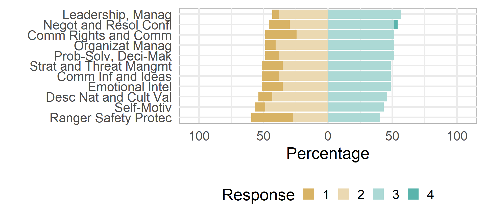
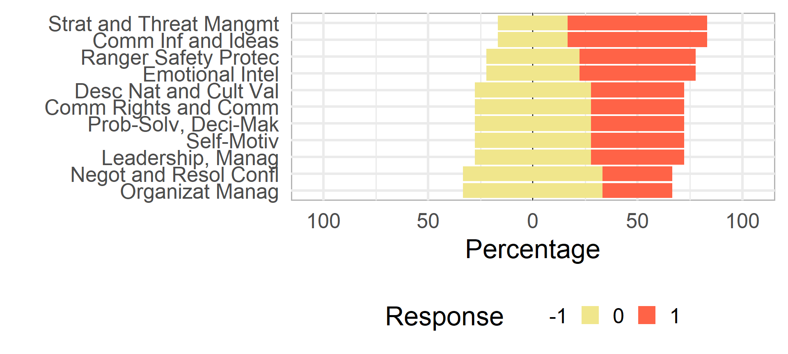
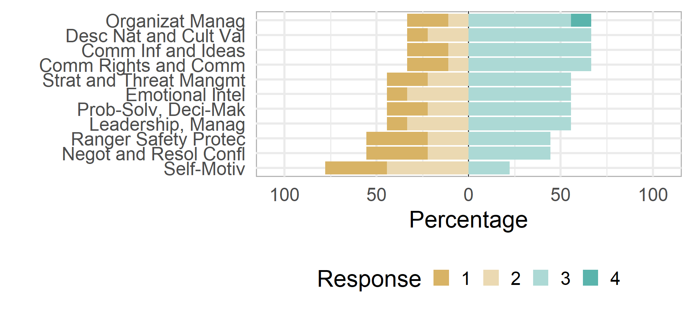
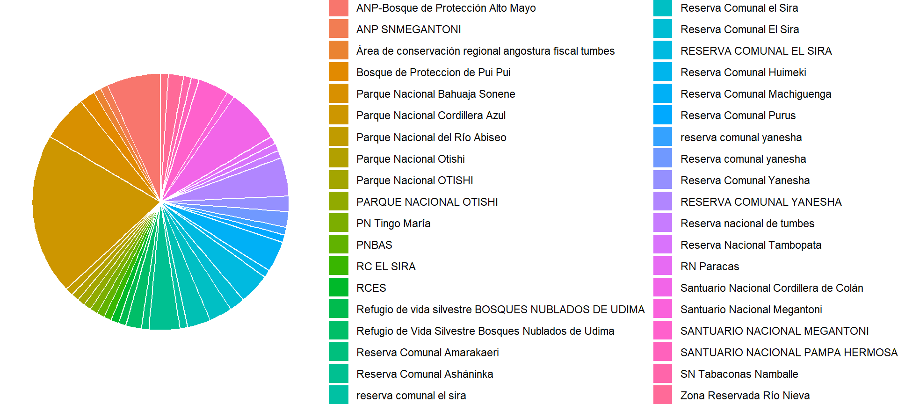
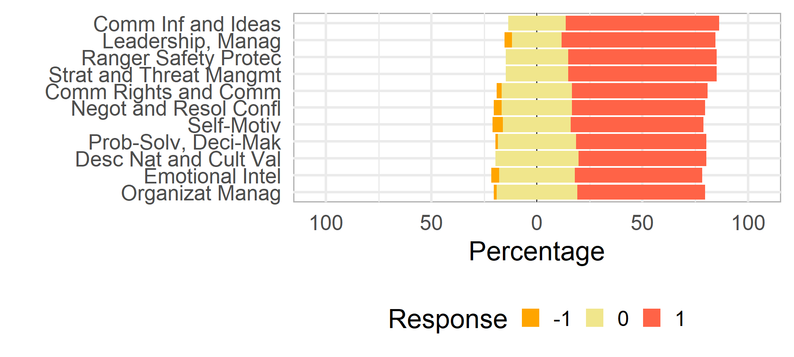

Total respondant
512
Man
76%
Woman
24%
Ages and Gender

Assesment
| Relevance | Competence | Skills |
|---|---|---|
| 0.680 | 2.068 | Leadership and Management |
| 0.676 | 1.967 | Ranger Safety and Protection |
| 0.658 | 2.057 | Organizational Management |
| 0.658 | 2.088 | Communication of Information and Ideas |
| 0.654 | 2.059 | Strategy and Threat Management in Protected Areas |
| 0.650 | 2.061 | Problem-Solving and Decision-Making |
| 0.639 | 2.084 | Self-Motivation |
| 0.633 | 2.004 | Community Rights and Communication |
| 0.613 | 2.092 | Description of Natural and Cultural Values in Protected Areas |
| 0.598 | 2.133 | Emotional Intelligence |
| 0.572 | 2.053 | Negotiation and Resolution of Interpersonal Conflicts |
Competence of Skills for Men

Competence of Skills for Women

Total
91
Man
59%
Woman
40.7%
Protected Areas


Total
68
Man
87%
Woman
13.2%
Protected Areas

Total
103
Man
79%
Woman
21.4%
Protected Areas


Total
162
Man
91%
Woman
9.3%
Protected Areas


Total
22
Man
55%
Woman
45.5%
Protected Areas



| ID | Genero | Edad | educacion formal | Protected_Area | Pais | Estado o Departamento: | Cargo | Agencia | Años de servicio | capacitaciónes técnicas | capacitacion en blandas |
|---|---|---|---|---|---|---|---|---|---|---|---|
| 1 | Masculino | 45 | Profesional Pregrado | PNN Serrania de Chiribiquete | Colombia | Guaviare | Profesioanal | Parques Nacionales Naturales de Colombia | 16 | 0 | 0 |
| 2 | Masculino | 45 | Profesional Pregrado | SF Plantas Medicinales Orito Ingi Ande | Colombia | Putumayo | PROFESIONAL UNIVERSITARIO | Parques Nacionales Naturales de Colombia | 1 | 10 | 10 |
| 3 | Femenino | 26 | Secundaria | PNN Tinigua | Colombia | Meta | Técnico UOT Uso Ocupacional y Tenencia | Parques Nacionales Naturales de Colombia | 1 | 1 | 0 |
| 4 | Masculino | 49 | Especialización | PNN La Paya | Colombia | Putumayo | Profesional Universitario | Parques Nacionales Naturales de Colombia | 12 | 2 | 1 |
| 5 | Femenino | 35 | Especialización | PNN Serrania de Chiribiquete | Colombia | Caquetá | Técnico Administrativo | Parques Nacionales Naturales de Colombia | 12 | 5 | 5 |
| 6 | Masculino | 34 | Profesional Pregrado | PNN Tinigua | Colombia | Meta | Profesional Administrativo | Parques Nacionales Naturales de Colombia | 9 | 3 | 3 |
| 7 | Masculino | 38 | Especialización | PNN Alto Fragua Indi Wasi | Colombia | Caquetá | Profesional Universitario | Parques Nacionales Naturales de Colombia | 4 | 1 | 3 |
| 8 | Masculino | 27 | Secundaria | PNN Alto Fragua Indi Wasi | Colombia | Caquetá | Enlace indígena | Parques Nacionales Naturales de Colombia | 1 | 6 | 3 |
| 9 | Masculino | 30 | Secundaria | PNN La Paya | Colombia | Putumayo | Enlace indígena del resguardo Cecilia Cocha | Parques Nacionales Naturales de Colombia | 2 | 3 | 4 |
| 10 | Masculino | 41 | Secundaria | Reserva Nacional Natural Nukak | Colombia | Guaviare | Operario Calificado | Parques Nacionales Naturales de Colombia | 8 | 6 | 5 |
| 11 | Masculino | 37 | Especialización | PNN La Paya | Colombia | Putumayo | Profesional Contratista Apoyo a Pueblo Siona | Parques Nacionales Naturales de Colombia | 1 | 0 | 0 |
| 12 | Masculino | 21 | Secundaria | PNN Tinigua | Colombia | Meta | Tecnico relacionamiento campesino | Parques Nacionales Naturales de Colombia | 1 | 0 | 0 |
| 13 | Masculino | 28 | Especialización | PNN Alto Fragua Indi Wasi | Colombia | Caquetá | Profesional de Restauración | Parques Nacionales Naturales de Colombia | 6 | 6 | 6 |
| 14 | Masculino | 36 | Secundaria | PNN Tinigua | Colombia | Meta | Tecnologo PVC | Parques Nacionales Naturales de Colombia | 4 | 0 | 0 |
| 15 | Femenino | 23 | Profesional Pregrado | Reserva Nacional Natural Nukak | Colombia | Guaviare | Tecnologo de apoyo en líneas Restauracion Ecologica y Uso, Ocupacion y Tenencia | Parques Nacionales Naturales de Colombia | 1 | 1 | 2 |
| 16 | Masculino | 29 | Profesional Pregrado | PNN Tinigua | Colombia | META | Profesional Ordenamiento Territorial | Parques Nacionales Naturales de Colombia | 1 | 1 | 0 |
| 17 | Masculino | 28 | Especialización | PNN La Paya | Colombia | Putumayo | Facilitador indígena | Parques Nacionales Naturales de Colombia | 3 | 1 | 0 |
| 18 | Femenino | 35 | Especialización | SF Plantas Medicinales Orito Ingi Ande | Colombia | Putumayo | Profesional de Investigación y Monitoreo | Parques Nacionales Naturales de Colombia | 3 | 4 | 3 |
| 19 | Masculino | 39 | Profesional Pregrado | PNN Cordillera de Los Picachos | Colombia | Caquetá | Profesional gestión y manejo | Parques Nacionales Naturales de Colombia | 4 | 1 | 1 |
| 20 | Masculino | 42 | Secundaria | Reserva Biológica Limoncocha | Ecuador | Sucumbios | Control de vida silvestre | Ministerio de Ambiente, Agua y Transición Ecológica | 10 | 4 | 5 |
| 21 | Masculino | 46 | Profesional Pregrado | Reserva Nacional de Flora y Fauna Tariquía | Bolivia | Tarija | Jefe de Proteccion | SERNAP | 3 | 2 | 2 |
| 22 | Masculino | 33 | Profesional Pregrado | Reserva Nacional de Flora y Fauna Tariquía | Bolivia | Tarija | Guardaparque 2 | SERNAP | 3 | 2 | 0 |
| 23 | Femenino | 30 | Profesional Pregrado | Reserva Comunal Purus | Perú | Departamento- Ucayali | Guardaparque | SERNANP | 2 | 0 | 0 |
| 24 | Femenino | 38 | Secundaria | Reserva Nacional de Flora y Fauna Tariquía | Bolivia | Tarija | Guardaparque | SERNAP | 3 | 2 | 2 |
| 25 | Masculino | 36 | Profesional Pregrado | Zona Reservada Santiago Comaina | Perú | Amazonas | Guardaparque | SERNANP | 1 | 2 | 0 |
| 26 | Masculino | 33 | Profesional Pregrado | Reserva comunal el sira | Perú | Ucayali | Gaurdaparque | SERNANP | 10 | 0 | 0 |
| 27 | Masculino | 45 | Tecnico | RCES | Perú | Ucayali | Guardaparque | SERNANP | 11 | 4 | 1 |
| 28 | Masculino | 35 | Secundaria | RC EL SIRA | Perú | Huanuco | Guardaparque | SERNANP | 2 | 4 | 1 |
| 29 | Masculino | 38 | Secundaria | Reserva comunal el sira | Perú | Huánuco | Guardaparque | SERNANP | 2 | 1 | 1 |
| 30 | Femenino | 27 | Secundaria | RESERVA COMUNAL EL SIRA | Perú | Ucayali | GUARDAPARQUE | SERNANP | 1 | 5 | 0 |
| 31 | Masculino | 49 | Secundaria | RESERVA COMUNAL EL SIRA | Perú | Ucayali | GUARDAPARQUE | SERNANP | 17 | 2 | 1 |
| 32 | Masculino | 39 | Tecnico | Reserva Comunal el Sira | Perú | República del Perú , Departamente de Ucayali | Guardaparque | SERNANP | 1 | 0 | 0 |
| 33 | Masculino | 37 | Secundaria | Reserva comunal el sira | Perú | Ucayali | Guardaparque | SERNANP | 11 | 3 | 2 |
| 34 | Masculino | 30 | Secundaria | Reserva Comunal el Sira | Perú | Ucayali | Guardaparque | SERNANP | 1 | 2 | 1 |
| 35 | Masculino | 49 | Tecnico | Área de Proteção Ambiental do Banhado Grande | Brasil | Rio Grande do Sul | Guarda Parque | Secretaria Estadual do Meio Ambiente | 15 | 1 | 1 |
| 36 | Masculino | 60 | Secundaria | RESERVA COMUNAL EL SIRA | Perú | Ucayali | GUARDAPARQUE | SERNANP | 2 | 4 | 1 |
| 37 | Femenino | 54 | Especialización | Dirección Territorial Amazonia | Colombia | Bogota | Enlace técnico | Parques Nacionales Naturales de Colombia | 25 | 1 | 0 |
| 38 | Masculino | 33 | Secundaria | Refugio de Vida Silvestre Bosques Nublados de Udima | Perú | cajamarca | guardaparque | SERNANP | 4 | 0 | 0 |
| 39 | Masculino | 45 | Secundaria | Santuario Nacional Cordillera de Colán | Perú | AMAZONAS | GUARDAPARQUE | SERNANP | 17 | 0 | 0 |
| 40 | Masculino | 32 | Tecnico | Santuario Nacional Cordillera de Colán | Perú | Amazonas | Guardaparque | SERNANP | 1 | 0 | 2 |
| 41 | Masculino | 27 | Profesional Pregrado | Zona Reservada Río Nieva | Perú | Amazonas | Guardaparque | SERNANP | 6 | 3 | 2 |
| 42 | Masculino | 29 | Profesional Pregrado | PN ANMI SERRANIA DEL IÑAO | Bolivia | Chuquisaca | Guardaparque | SERNAP | 9 | 5 | 2 |
| 43 | Masculino | 32 | Secundaria | Reserva Nacional de Flora y Fauna Tariquía | Bolivia | Tarija | Guardaparque | SERNAP | 2 | 1 | 1 |
| 44 | Masculino | 32 | Secundaria | PN ANMI SERRANIA DEL IÑAO | Bolivia | Chuquisaca | Guarda parque | SERNAP | 10 | 5 | 2 |
| 45 | Femenino | 40 | Secundaria | PN ANMI SERRANIA DEL IÑAO | Bolivia | Chuquisaca | Guardaparque | SERNAP | 14 | 5 | 2 |
| 46 | Masculino | 45 | Tecnico | Santuario Nacional Cordillera de Colán | Perú | Amazonas | Guardaparque | SERNANP | 12 | 1 | 1 |
| 47 | Masculino | 54 | Secundaria | Área Natural de Manejo Integrado Nacional Apolobamba | Bolivia | La Paz | Guardaparque | SERNAP | 25 | 1 | 0 |
| 48 | Masculino | 31 | Secundaria | Reserva Nacional de Flora y Fauna Tariquía | Bolivia | Tarija | Guardaparque | SERNAP | 3 | 0 | 0 |
| 49 | Masculino | 51 | Secundaria | Reserva Nacional de Flora y Fauna Tariquía | Bolivia | Tarija | Guardaparque | SERNAP | 26 | 2 | 0 |
| 50 | Masculino | 33 | Secundaria | Santuario Nacional Cordillera de Colán | Perú | Amazonas | Guardaparque | SERNANP | 2 | 2 | 1 |
| 51 | Masculino | 33 | Secundaria | PN ANMI SERRANIA DEL IÑAO | Bolivia | Chuquisaca | Guardaparque líderes por la vida | SERNAP | 3 | 5 | 2 |
| 52 | Masculino | 51 | Secundaria | Área Natural de Manejo Integrado Nacional Apolobamba | Bolivia | La Paz | Guardaparque | SERNAP | 25 | 2 | 2 |
| 53 | Masculino | 46 | Tecnico | SN Tabaconas Namballe | Perú | Cajamarca | Guardaparque | SERNANP | 15 | 1 | 0 |
| 54 | Masculino | 47 | Profesional Pregrado | PN ANMI SERRANIA DEL IÑAO | Bolivia | Chuquisaca | Guardaparque | Estado | 16 | 5 | 4 |
| 55 | Masculino | 50 | Secundaria | Área Natural de Manejo Integrado Nacional Apolobamba | Bolivia | La Paz | GUARDAPARQUE | Servicio Naciuna de ares protegedas | 17 | 3 | 1 |
| 56 | Masculino | 54 | Secundaria | Reserva Nacional de Flora y Fauna Tariquía | Bolivia | Tarija | Guardaparque | MMYA SERNAP TARIQUIA | 24 | 0 | 0 |
| 57 | Masculino | 53 | Secundaria | Reserva Nacional Natural Nukak | Colombia | Guaviare | Técnico Administrativo | Parques Nacionales Naturales de Colombia | 12 | 12 | 12 |
| 58 | Masculino | 52 | Secundaria | Área Natural de Manejo Integrado Nacional Apolobamba | Bolivia | La Paz | Guardaparque lll. | SERNAP | 28 | 2 | 0 |
| 59 | Masculino | 59 | Secundaria | Área Natural de Manejo Integrado Nacional Apolobamba | Bolivia | La Paz | Guardaparque | Sernap Apolobamba | 27 | 1 | 1 |
| 60 | Masculino | 35 | Secundaria | Área Natural de Manejo Integrado Nacional Apolobamba | Bolivia | La Paz | Guardaparque | SERNAP | 12 | 1 | 0 |
| 61 | Masculino | 47 | Secundaria | Área Natural de Manejo Integrado Nacional Apolobamba | Bolivia | La Paz | Originario | Sernap | 10 | 2 | 0 |
| 62 | Masculino | 30 | Secundaria | Parque Estadual Delta do Jacuí | Brasil | Rio Grande do Sul | Guarda-Parque | Secretaria do Meio ambiente e sustentabilidade | 13 | 2 | 1 |
| 63 | Femenino | 35 | Secundaria | Área Natural de Manejo Integrado Nacional Apolobamba | Bolivia | La Paz | Guardaparque | Sernap | 17 | 3 | 1 |
| 64 | Masculino | 50 | Secundaria | Reserva Nacional de Flora y Fauna Tariquía | Bolivia | Tarija | Ninguna | SERNAP | 11 | 3 | 0 |
| 65 | Femenino | 39 | Secundaria | Área Natural de Manejo Integrado Nacional Apolobamba | Bolivia | La Paz | Guardaparque | SERNAP | 3 | 4 | 0 |
| 66 | Masculino | 56 | Secundaria | Reserva Comunal Yanesha | Perú | Pasco | Guardaparque | SERNANP | 20 | 31 | 1 |
| 67 | Masculino | 40 | Secundaria | Área Natural de Manejo Integrado Nacional Apolobamba | Bolivia | La Paz | Guardaparque. | Sernap | 12 | 0 | 0 |
| 68 | Masculino | 28 | Secundaria | Parque Nacional Noel Kempff Mercado | Bolivia | Santa Cruz | Jefe de Protección | Servicio Nacional de Áreas Protegidas | 8 | 1 | 1 |
| 69 | Masculino | 28 | Secundaria | Parque Nacional Noel Kempff Mercado | Bolivia | Santa Cruz | Guarda parque | Sernap | 7 | 10 | 6 |
| 70 | Femenino | 25 | Profesional Pregrado | Reserva Comunal Huimeki | Perú | Loreto | Guardaparque | SERNANP | 2 | 2 | 0 |
| 71 | Masculino | 27 | Secundaria | Parque Nacional Noel Kempff Mercado | Bolivia | Santa cruz | Guarda parque | SERNAP | 1 | 5 | 4 |
| 72 | Masculino | 40 | Secundaria | Área Natural de Manejo Integrado Nacional Apolobamba | Bolivia | La Paz | Guardaparque | Sernap | 12 | 0 | 0 |
| 73 | Masculino | 63 | Especialización | PNN Serrania de los Churumbelos Auka Wasi | Colombia | Cauca, Putumayo, Huila y Caquetá | Jefe de Area Protegida | Parques Nacionales Naturales de Colombia | 28 | 0 | 0 |
| 74 | Masculino | 54 | Secundaria | Reserva Nacional de Flora y Fauna Tariquía | Bolivia | Tarija | Guardaparque | MM YA SERNAP TARIQUIA | 26 | 0 | 0 |
| 75 | Masculino | 33 | Especialización | Reserva Nacional de Flora y Fauna Tariquía | Bolivia | Tarija | Guardaparque | SERNAP | 2 | 3 | 1 |
| 76 | Masculino | 33 | Secundaria | Reserva nacional de tumbes | Perú | Tumbes | Guardaparque | SERNANP | 6 | 6 | 1 |
| 77 | Masculino | 36 | Profesional Pregrado | Reserva Nacional de Flora y Fauna Tariquía | Bolivia | Tarija | Jefe de protección | Servicio nacional de áreas protegidas -sernap | 3 | 3 | 1 |
| 78 | Femenino | 29 | Secundaria | Reserva Comunal Yanesha | Perú | Pasco | Guardaparque | SERNANP | 2 | 0 | 0 |
| 79 | Masculino | 48 | Secundaria | Área Natural de Manejo Integrado Nacional Apolobamba | Bolivia | La Paz | Guardaparque | Sernap | 26 | 3 | 0 |
| 80 | Masculino | 45 | Secundaria | Parque Nacional del Río Abiseo | Perú | San Martin | Guardaparque | SERNANP | 14 | 2 | 2 |
| 81 | Masculino | 59 | Secundaria | Área Natural de Manejo Integrado Nacional Apolobamba | Bolivia | La Paz | Guardaparque | Servicio Nacional de Áreas protegidas (SERNAP) | 24 | 1 | 1 |
| 82 | Masculino | 35 | Tecnico | Reserva Comunal Asháninka | Perú | Junín | Guardaparque | SERNANP | 5 | 11 | 1 |
| 83 | Femenino | 39 | Secundaria | ANP-Bosque de Protección Alto Mayo | Perú | San Martín | Guardaparque | SERNANP | 5 | 8 | 3 |
| 84 | Masculino | 39 | Secundaria | ANP-Bosque de Protección Alto Mayo | Perú | San Martín | Guardaparque | SERNANP | 7 | 6 | 5 |
| 85 | Masculino | 43 | Tecnico | ANP-Bosque de Protección Alto Mayo | Perú | San Martín | Guardaparque | SERNANP | 13 | 0 | 0 |
| 86 | Masculino | 48 | Secundaria | Reserva de la Biosfera Estación Biológica del Beni | Bolivia | Beni | Jefe de Protección | Servicio Nacional de Áreas Protegidas | 20 | 10 | 15 |
| 87 | Masculino | 41 | Secundaria | RB EBB | Bolivia | Beni | Guarda parque de áreas protegidas | SERNAP | 13 | 0 | 0 |
| 88 | Masculino | 27 | Secundaria | Reserva de la Biosfera Estación Biológica del Beni | Bolivia | Beni | Guardaparqué | Proteger la flora la fauna recursos hídricos y en general de toda la biota | 1 | 0 | 0 |
| 89 | Masculino | 54 | Tecnico | ANP-Bosque de Protección Alto Mayo | Perú | San Martín | GUARDAPARQUE | SERNANP | 12 | 1 | 0 |
| 90 | Femenino | 34 | Secundaria | RB EBB | Bolivia | Beni | Guardaparque | RB-EBB | 9 | 2 | 1 |
| 91 | Masculino | 29 | Secundaria | Reserva de la Biosfera Estación Biológica del Beni | Bolivia | Beni | Guardapargues | Sernap | 4 | 0 | 0 |
| 92 | Masculino | 42 | Secundaria | Reserva de la Biosfera Estación Biológica del Beni | Bolivia | Beni, Bolivia | Guardaparque | Sernap | 11 | 2 | 0 |
| 93 | Masculino | 34 | Profesional Pregrado | Reserva de la Biosfera Estación Biológica del Beni | Bolivia | Beni | Guardaparque | SERNAP | 42 | 4 | 2 |
| 94 | Masculino | 38 | Profesional Pregrado | Parque Nacional y Área Natural de Manejo Integrado Aguaragüe | Bolivia | Tarija | Guardaparque II | Sernap | 8 | 5 | 1 |
| 95 | Masculino | 54 | Secundaria | Reserva de la Biosfera Estación Biológica del Beni | Bolivia | Departamento del Beni | Guardaparque | SERNAP | 29 | 3 | 4 |
| 96 | Masculino | 52 | Especialización | SF Plantas Medicinales Orito Ingi Ande | Colombia | Putumayo | Jefe de Área Protegida | Parques Nacionales Naturales de Colombia | 23 | 2 | 5 |
| 97 | Masculino | 39 | Secundaria | PN ANMI SERRANIA DEL IÑAO | Bolivia | Chuquisaca | Guardaparque | SERNAP | 12 | 5 | 2 |
| 98 | Masculino | 40 | Secundaria | Parque Nacional y Área Natural de Manejo Integrado Aguaragüe | Bolivia | Tarija | Guardaparque | Servicio Nacional de Áreas Protegidas | 11 | 1 | 1 |
| 99 | Masculino | 31 | Secundaria | Parque Nacional y Área Natural de Manejo Integrado Aguaragüe | Bolivia | Tarija | GUARDAPARQUE | SERVICIO NACIONAL DE AREAS PROTEGIDAS | 8 | 3 | 2 |
| 100 | Femenino | 33 | Profesional Pregrado | Parque Nacional y Área Natural de Manejo Integrado Aguaragüe | Bolivia | Tarija | Guardaparque | SERNAP | 1 | 5 | 1 |
| 101 | Masculino | 46 | Secundaria | Parque Nacional y Área Natural de Manejo Integrado Aguaragüe | Bolivia | Tarija | Jefe de Protección | Servicio Nacional de Áreas Protegidas (SERNAP) | 22 | 1 | 0 |
| 102 | Masculino | 56 | Secundaria | Reserva de la Biosfera Estación Biológica del Beni | Bolivia | Beni | Guardaparque | Servicio Nacional de Áreas Protegidas(SERNAP) | 28 | 3 | 3 |
| 103 | Masculino | 52 | Secundaria | Reserva Nacional de Flora y Fauna Tariquía | Bolivia | Tarija | Guardaparque | Servicio Nacional de Áreas Protegidas | 13 | 3 | 3 |
| 104 | Masculino | 27 | Secundaria | RESERVA COMUNAL YANESHA | Perú | PASCO | GUARDAPARQUE | SERNANP | 1 | 0 | 1 |
| 105 | Masculino | 30 | Secundaria | Reserva comunal yanesha | Perú | Pasco | Guarparque | SERNANP | 1 | 2 | 0 |
| 106 | Masculino | 54 | Secundaria | Parque Nacional ANMI Aguarague | Bolivia | Tarija | Guardaparque | PN-ANMI Aguarague (SERNAP) | 13 | 4 | 3 |
| 107 | Femenino | 40 | Secundaria | Reserva de la Biosfera Tierra Comunitaria Origen Pilon Lajas | Bolivia | Beni | GUARDAPARQUE | Ministerio de medio ambiente y agua - sernap | 17 | 3 | 5 |
| 108 | Masculino | 37 | Secundaria | Zona Reservada Río Nieva | Perú | Amazonas | Guardaparque | SERNANP | 10 | 0 | 0 |
| 109 | Masculino | 31 | Profesional Pregrado | Área de conservación regional angostura fiscal tumbes | Perú | Tumbes | Presidente de la asociación | Guadarparque voluntario | 7 | 2 | 2 |
| 110 | Masculino | 27 | Secundaria | Reserva de la Biosfera Tierra Comunitaria Origen Pilon Lajas | Bolivia | Beni | Guarda parque | Sernap | 10 | 1 | 2 |
| 111 | Masculino | 32 | Secundaria | Reserva de la Biosfera Tierra Comunitaria Origen Pilon Lajas | Bolivia | Beni | Guardaparque | SERNAP | 4 | 1 | 2 |
| 112 | Masculino | 31 | Secundaria | Reserva de la Biosfera Tierra Comunitaria Origen Pilon Lajas | Bolivia | Beni | Guardaparque | SERNAP | 6 | 2 | 0 |
| 113 | Femenino | 37 | Secundaria | Parque Nacional Otishi | Perú | Junin | Guardaparque | SERNANP | 15 | 0 | 0 |
| 114 | Masculino | 37 | Secundaria | Reserva de la Biosfera Tierra Comunitaria Origen Pilon Lajas | Bolivia | Beni | Guarda parque | Sernap | 4 | 2 | 0 |
| 115 | Femenino | 28 | Profesional Pregrado | RESERVA COMUNAL YANESHA | Perú | PASCO | GUARDAPARQUE | SERNANP | 3 | 11 | 3 |
| 116 | Masculino | 55 | Secundaria | Reserva de la Biosfera Tierra Comunitaria Origen Pilon Lajas | Bolivia | Beni | Guarda parque | SERNAP | 26 | 20 | 0 |
| 117 | Masculino | 47 | Secundaria | Reserva Nacional Tambopata | Perú | Madre de Dios | Guardaparque coordinador | SERNANP | 19 | 4 | 0 |
| 118 | Masculino | 42 | Secundaria | RESERVA COMUNAL YANESHA | Perú | PASCO | GUARDAPARQUE | SERNANP | 13 | 10 | 2 |
| 119 | Masculino | 48 | Secundaria | Reserva de la Biosfera Tierra Comunitaria Origen Pilon Lajas | Bolivia | Beni | Jefe de Protección | Dependiente del Ministerio de Medio Ambiente y Agua - SERNAP | 25 | 1 | 1 |
| 120 | Masculino | 35 | Secundaria | Reserva Comunal Machiguenga | Perú | Cusco | Guardaparque | SERNANP | 6 | 0 | 0 |
| 121 | Masculino | 55 | Secundaria | Reserva de la Biosfera Tierra Comunitaria Origen Pilon Lajas | Bolivia | Beni | Guardaparque | SERNAP | 26 | 2 | 0 |
| 122 | Masculino | 48 | Secundaria | Reserva de la Biosfera Tierra Comunitaria Origen Pilon Lajas | Bolivia | Beni | Jefe de Protección | Dependiente de Ministerio de Medio Ambiente y Agua - SENAP | 25 | 1 | 1 |
| 123 | Masculino | 48 | Secundaria | Reserva de la Biosfera Tierra Comunitaria Origen Pilon Lajas | Bolivia | Beni | Jefe de Protección | SERNAP | 25 | 1 | 0 |
| 124 | Masculino | 34 | Secundaria | RESERVA COMUNAL YANESHA | Perú | PASCO | GUARDAPARQUE-CHOFER | SERNANP | 9 | 0 | 0 |
| 125 | Femenino | 25 | Secundaria | Reserva Comunal Machiguenga | Perú | CUSCO | GUARDAPARQUE | SERNANP | 1 | 0 | 1 |
| 126 | Masculino | 58 | Secundaria | Área Natural de Manejo Integrado Nacional Apolobamba | Bolivia | La Paz | Guardaparque | Sernap | 23 | 4 | 5 |
| 127 | Femenino | 28 | Profesional Pregrado | PARQUE NACIONAL OTISHI | Perú | JUNIN | GUARDAPARQUE | SERNANP | 6 | 1 | 1 |
| 128 | Masculino | 41 | Profesional Pregrado | Bosque de Proteccion de Pui Pui | Perú | Junin | Guardaparque | SERNANP | 13 | 4 | 2 |
| 129 | Masculino | 57 | Secundaria | Parque Nacional y Área Natural de Manejo Integrado Amboró | Bolivia | Santa Cruz | Guardaparque | SERNAP | 33 | 0 | 0 |
| 130 | Masculino | 66 | Secundaria | Parque Nacional y Área Natural de Manejo Integrado Amboró | Bolivia | Santa Cruz | Guardaparque | SERNAP | 32 | 0 | 0 |
| 131 | Masculino | 30 | Secundaria | Reserva Comunal el Sira | Perú | Huanuco | Guardaparque | SERNANP | 8 | 0 | 1 |
| 132 | Masculino | 46 | Profesional Pregrado | Bosque de Proteccion de Pui Pui | Perú | Junin | Jefe | SERNANP | 20 | 2 | 0 |
| 133 | Masculino | 31 | Secundaria | Reserva Comunal Asháninka | Perú | Junín | Guardaparque | SERNANP | 6 | 3 | 1 |
| 134 | Femenino | 37 | Profesional Pregrado | Reserva comunal yanesha | Perú | Pasco | Guardaparque | SERNANP | 2 | 0 | 1 |
| 135 | Masculino | 37 | Secundaria | reserva comunal yanesha | Perú | pasco | guardaparque | SERNANP | 8 | 0 | 3 |
| 136 | Femenino | 23 | Profesional Pregrado | PNN La Paya | Colombia | Putumayo | FACILITADOR INDIGENA | Parques Nacionales Naturales de Colombia | 1 | 3 | 2 |
| 137 | Femenino | 25 | Secundaria | Reserva Comunal Asháninka | Perú | Junín | Guardaparque | SERNANP | 6 | 3 | 1 |
| 138 | Masculino | 53 | Secundaria | Parque Nacional Cordillera Azul | Perú | Region San Martin | Guardaparque Oficial Respomsable | SERNANP | 19 | 3 | 3 |
| 139 | Masculino | 30 | Secundaria | Parque Nacional Cordillera Azul | Perú | San martín | Guardaparque oficial | SERNANP | 10 | 2 | 2 |
| 140 | Masculino | 59 | Tecnico | Parque Nacional Cordillera Azul | Perú | Región ucayali | Guardaparque oficial | SERNANP | 13 | 5 | 0 |
| 141 | Masculino | 43 | Tecnico | Parque Nacional Cordillera Azul | Perú | Ucayali | Contratado | SERNANP | 1 | 3 | 0 |
| 142 | Masculino | 46 | Secundaria | Parque Nacional Cordillera Azul | Perú | San Martin | Guardaparque Responsable | SERNANP | 22 | 4 | 3 |
| 143 | Masculino | 37 | Secundaria | Parque Nacional y Área Natural de Manejo Integrado Amboró | Bolivia | Santa Cruz | Guardaparque | Servicio nacional de areas protegidas | 17 | 4 | 4 |
| 144 | Masculino | 43 | Secundaria | Parque Nacional y Área Natural de Manejo Integrado Amboró | Bolivia | Santa Cruz | Guardaparque | Servicio nacional de areas protegidas | 17 | 2 | 1 |
| 145 | Masculino | 41 | Maestría | Parque Nacional OTISHI | Perú | Junín | Guardaparque | SERNANP | 1 | 2 | 0 |
| 146 | Masculino | 62 | Secundaria | Reserva Comunal Machiguenga | Perú | Cusco | Técnico de Áreas Naturales Protegidas | SERNANP | 18 | 3 | 3 |
| 147 | Masculino | 48 | Secundaria | Area Natural de Manejo Integrado El Palmar | Bolivia | Chuquisaca | Jefe de Proteccion | Servicio Nacional de Areas Protegidas - SERNAP | 19 | 0 | 2 |
| 148 | Masculino | 35 | Secundaria | ANMI EL PALMAR | Bolivia | Chuquisaca | Guardaparque | Ministerio de medio ambiente y agua | 9 | 0 | 3 |
| 149 | Masculino | 48 | Secundaria | PN ANMI SERRANIA DEL IÑAO | Bolivia | Chuquisaca | Guardaparque | UNIDAD CENTRAL SERNAP | 9 | 1 | 0 |
| 150 | Masculino | 42 | Profesional Pregrado | Reserva Biológica Limoncocha | Ecuador | SUCUMBÍOS | GUARDAPARQUE | Ministerio de Ambiente, Agua y Transición Ecológica | 15 | 5 | 1 |
| 151 | Femenino | 34 | Maestría | Reserva Biológica Limoncocha | Ecuador | Sucumbios | Guardaparque | Ministerio de Ambiente, Agua y Transición Ecológica | 13 | 4 | 2 |
| 152 | Masculino | 22 | Secundaria | ANMI EL PALMAR | Bolivia | Chuquisaca | Guardaparque | SERNAP | 1 | 0 | 1 |
| 153 | Masculino | 29 | Secundaria | Area Natural de Manejo Integrado El Palmar | Bolivia | Chuquisaca | Guardaparque | Servicio Nacional de Areas Protegidas | 4 | 1 | 0 |
| 154 | Masculino | 24 | Secundaria | Reserva Biológica Limoncocha | Ecuador | Reserva Biológica Limoncocha | Guardaparque | Ministerio de Ambiente, Agua y Transición Ecológica | 1 | 7 | 4 |
| 155 | Masculino | 36 | Secundaria | PNN La Paya | Colombia | Putumayo | Facilitador Local Campesino - UOT. | Parques Nacionales Naturales de Colombia | 1 | 2 | 2 |
| 156 | Femenino | 43 | Secundaria | PNN La Paya | Colombia | Putumayo | Operario | Parques Nacionales Naturales de Colombia | 8 | 0 | 1 |
| 157 | Femenino | 28 | Profesional Pregrado | RESERVA COMUNAL EL SIRA | Perú | Ucayali | GUARDAPARQUE OFICIAL | SERNANP | 1 | 1 | 1 |
| 158 | Masculino | 44 | Secundaria | Parque Nacional y Área Natural de Manejo Integrado Amboró | Bolivia | Santa Cruz | Guardaparque lll | SERNAP AMBORO | 22 | 4 | 4 |
| 159 | Masculino | 34 | Secundaria | Reserva Biológica Limoncocha | Ecuador | Sucumbíos | Guardaparque | Ministerio de Ambiente, Agua y Transición Ecológica | 10 | 5 | 1 |
| 160 | Masculino | 28 | Secundaria | Parque Nacional Cordillera Azul | Perú | San Martín | Guardaparque oficial | SERNANP | 7 | 0 | 1 |
| 161 | Masculino | 26 | Secundaria | SANTUARIO NACIONAL PAMPA HERMOSA | Perú | JUNÍN | GUARDAPARQUE | SERNANP | 2 | 0 | 0 |
| 162 | Masculino | 32 | Profesional Pregrado | Parque Nacional Cordillera Azul | Perú | SAN MARTIN | GUARDAPARQUE | SERNANP | 1 | 5 | 0 |
| 163 | Masculino | 27 | Secundaria | Santuario Nacional Cordillera de Colán | Perú | AMAZONAS | GUARDAPARQUE | SERNANP | 6 | 2 | 2 |
| 164 | Masculino | 36 | Secundaria | Parque Nacional y Área Natural de Manejo Integrado Amboró | Bolivia | Santa Cruz | Guardaparque | Servicio Nacional de Áreas Protegidas (Sernap) | 4 | 2 | 0 |
| 165 | Masculino | 55 | Secundaria | Parque Nacional y Área Natural de Manejo Integrado Amboró | Bolivia | Santa Cruz | Auxiliar Guardaparque | SERNAP | 20 | 0 | 2 |
| 166 | Masculino | 56 | Secundaria | Parque Nacional y Área Natural de Manejo Integrado Amboró | Bolivia | Santa Cruz | Jefe de Protección | SERNAP | 24 | 1 | 1 |
| 167 | Masculino | 43 | Secundaria | Parque Nacional y Área Natural de Manejo Integrado Amboró | Bolivia | Santa Cruz | Guardaparque | Servicio Nacional de Áreas Protegidas | 21 | 2 | 0 |
| 168 | Masculino | 55 | Secundaria | Parque Nacional y Area Natural de Manejo Integrado Kaa-Iya del Gran Chaco | Bolivia | Santa Cruz de La Sierra | Jefe de Protección del Area Protegida Kaa-Iya del Gran Chaco | Servicio Nacional de Areas Protegidas-SERNAP | 24 | 2 | 5 |
| 169 | Masculino | 38 | Secundaria | Santuario Nacional Cordillera de Colán | Perú | Amazonas | Guardaparque | SERNANP | 15 | 4 | 0 |
| 170 | Masculino | 43 | Secundaria | Parque Nacional Cordillera Azul | Perú | SAN MARTIN | Guarda Parque Oficial | SERNANP | 6 | 1 | 2 |
| 171 | Masculino | 51 | Secundaria | Parque Nacional Cordillera Azul | Perú | San Martín | Guarda parque Ofecial | SERNANP | 16 | 1 | 2 |
| 172 | Masculino | 50 | Secundaria | Parque Nacional y Area Natural de Manejo Integrado Kaa-Iya del Gran Chaco | Bolivia | Santa Cruz de La Sierra | Técnico GUARDA PARQUE | Servicio Nacional de Areas Protegidas-SERNAP | 28 | 0 | 0 |
| 173 | Masculino | 43 | Secundaria | Parque Nacional Cordillera Azul | Perú | SAN MARTIN | Guarda Parque Oficial | SERNANP | 6 | 1 | 2 |
| 174 | Masculino | 39 | Secundaria | PNN La Paya | Colombia | Putumayo | Operario | Parques Nacionales Naturales de Colombia | 1 | 0 | 0 |
| 175 | Masculino | 42 | Secundaria | Parque Nacional Cordillera Azul | Perú | DE PARTAMENTO DE SAN MARTIN | Garda parque oficial | SERNANP | 16 | 1 | 2 |
| 176 | Masculino | 52 | Secundaria | Parque Nacional y Area Natural de Manejo Integrado Kaa-Iya del Gran Chaco | Bolivia | Santa Cruz de La Sierra | Tec. GUARDAPARQUE | Servicio Nacional de Areas Protegidas-SERNAP | 24 | 2 | 3 |
| 177 | Masculino | 58 | Secundaria | Parque Nacional y Area Natural de Manejo Integrado Kaa-Iya del Gran Chaco | Bolivia | Santa Cruz de La Sierra | Tecnico Guardaparque | Servicio Nacional de Areas Protegidas-SERNAP | 27 | 1 | 3 |
| 178 | Masculino | 51 | Secundaria | Parque Nacional Cordillera Azul | Perú | San Martin | Guarda parque Ofecial | SERNANP | 16 | 1 | 3 |
| 179 | Masculino | 34 | Profesional Pregrado | Parque Nacional Bahuaja Sonene | Perú | Departamentos de Puno y Madre de Dios | Guardaparque | SERNANP | 7 | 4 | 2 |
| 180 | Masculino | 58 | Secundaria | PN_ANMI_ MADIDI | Bolivia | La Paz | Jefe de proteccion | SERNAP | 28 | 1 | 0 |
| 181 | Masculino | 50 | Secundaria | Parque Nacional y Area Natural de Manejo Integrado Kaa-Iya del Gran Chaco | Bolivia | Santa Cruz de La Sierra | Tec. GUARDAPARQUE | Servicio Nacional de Areas Protegidas-SERNAP | 27 | 0 | 0 |
| 182 | Masculino | 40 | Maestría | PN Tingo María | Perú | Huánuco | Especialista | SERNANP | 13 | 0 | 0 |
| 183 | Masculino | 50 | Secundaria | Parque Nacional y Area Natural de Manejo Integrado Kaa-Iya del Gran Chaco | Bolivia | Santa Cruz de La Sierra | Guarda Parque | Servicio Nacional de Areas Protegidas-SERNAP | 13 | 2 | 1 |
| 184 | Masculino | 59 | Secundaria | Parque Nacional y Área Natural de Manejo Integrado Amboró | Bolivia | Santa Cruz | Guardaparque | Servicio Nacional de Areas Protegidas | 28 | 1 | 1 |
| 185 | Masculino | 42 | Secundaria | Parque Nacional y Área Natural de Manejo Integrado | Bolivia | La paz | Guarda parque II | Servicio Nacional de Áreas Protegidas | 17 | 3 | 4 |
| 186 | Masculino | 39 | Secundaria | Parque Nacional y Área Natural de Manejo Integrado Cotapata | Bolivia | La Paz | GUARDAPARQUE | Servicio Nacional de Áreas Protegidas | 15 | 3 | 2 |
| 187 | Masculino | 34 | Secundaria | Parque Nacional y Area Natural de Manejo Integrado Kaa-Iya del Gran Chaco | Bolivia | Santa Cruz de La Sierra | GUARDAPARQUE | Servicio Nacional de Areas Protegidas-SERNAP | 14 | 5 | 3 |
| 188 | Masculino | 39 | Secundaria | PN_ANMI_ MADIDI | Bolivia | La Paz | Guardapaque | SERNAP | 15 | 10 | 8 |
| 189 | Masculino | 55 | Secundaria | Parque Nacional y Área Natural de Manejo Integrado Cotapata | Bolivia | La Paz | Guardaparque | Sernap | 20 | 0 | 0 |
| 190 | Masculino | 43 | Secundaria | Parque Nacional y Área Natural de Manejo Integrado Amboró | Bolivia | Santa Cruz | Guarda Parque | Sernap | 5 | 5 | 1 |
| 191 | Femenino | 29 | Profesional Pregrado | Parque Nacional y Área Natural de Manejo Integrado Cotapata | Bolivia | La Paz | Jefe de protección | Servicio Nacional de Áreas Protegidas | 1 | 2 | 0 |
| 192 | Masculino | 43 | Secundaria | Parque Nacional y Área Natural de Manejo Integrado Cotapata | Bolivia | La Paz | Guardaparque | SERNAP Bolivia | 13 | 2 | 2 |
| 193 | Femenino | 30 | Tecnico | PNBAS | Perú | Puno | Guardaparque | SERNANP | 3 | 0 | 0 |
| 194 | Masculino | 50 | Profesional Pregrado | Parque Nacional Noel Kempff Mercado | Bolivia | Santa Cruz de la Sierra | Guardaparque | SERNAP Servicio Nacional de Áreas Protegidas | 27 | 0 | 1 |
| 195 | Masculino | 56 | Secundaria | Parque Nacional y Área Natural de Manejo Integrado Cotapata | Bolivia | La Paz | Guardaparque | Servicio Nacional de Areas Protegidas SERNAP | 26 | 3 | 4 |
| 196 | Masculino | 52 | Secundaria | Parque Nacional Noel Kempff Mercado | Bolivia | Santacruz | Guardaparque | Sernap | 27 | 0 | 0 |
| 197 | Masculino | 52 | Profesional Pregrado | Parque Nacional y Área Natural de Manejo Integrado Cotapata | Bolivia | La Paz | Técnico Guardaparque | Servicio Nacional de Áreas Protegidas (SERNAP) | 21 | 0 | 2 |
| 198 | Femenino | 27 | Profesional Pregrado | Parque Nacional Cordillera Azul | Perú | San Martin | Guardaparque Oficial | SERNANP | 7 | 0 | 0 |
| 199 | Femenino | 27 | Profesional Pregrado | Parque Nacional Cordillera Azul | Perú | SAN MARTÍN | GUARDAPARQUE OFICIAL | SERNANP | 9 | 4 | 0 |
| 200 | Masculino | 42 | Secundaria | Parque Nacional y Área Natural de Manejo Integrado Cotapata | Bolivia | La Paz | Guardaparque | Servicio Nacional de Áreas Protegidas - Sernap. | 15 | 0 | 1 |
| 201 | Masculino | 56 | Secundaria | Área Natural de Manejo Integrado Nacional Apolobamba | Bolivia | La Paz | Guardaparque | SERNAP | 29 | 0 | 0 |
| 202 | Masculino | 48 | Secundaria | Parque Nacional y Área Natural de Manejo Integrado Cotapata | Bolivia | La Paz | Guardaparque | SERNAP = MMA y A | 16 | 0 | 2 |
| 203 | Masculino | 37 | Secundaria | Parque Nacional y Area Natural de Manejo Integrado Kaa-Iya del Gran Chaco | Bolivia | Santa Cruz de La Sierra | Tec. Guardaparque | Servicio Nacional de Areas Protegidas-SERNAP | 13 | 2 | 4 |
| 204 | Masculino | 43 | Secundaria | RN Paracas | Perú | Ica | Guardaparque | SERNANP | 16 | 0 | 0 |
| 205 | Masculino | 42 | Secundaria | Parque Nacional y Area Natural de Manejo Integrado Kaa-Iya del Gran Chaco | Bolivia | Santa Cruz de La Sierra | Guardaparque | Servicio Nacional de Areas Protegidas-SERNAP | 14 | 2 | 6 |
| 206 | Masculino | 52 | Secundaria | Refugio de vida silvestre BOSQUES NUBLADOS DE UDIMA | Perú | Cajamarca | Guardaparque | SERNANP | 14 | 0 | 2 |
| 207 | Masculino | 48 | Secundaria | Reserva Comunal El Sira | Perú | Ucayali | Guardaparque | SERNANP | 2 | 3 | 1 |
| 208 | Masculino | 32 | Secundaria | Parque Nacional y Area Natural de Manejo Integrado Kaa-Iya del Gran Chaco | Bolivia | Santa Cruz de La Sierra | Guardaparque | Servicio Nacional de Areas Protegidas-SERNAP | 11 | 0 | 7 |
| 209 | Masculino | 59 | Secundaria | Parque Nacional y Area Natural de Manejo Integrado Kaa-Iya del Gran Chaco | Bolivia | Santa Cruz de La Sierra | Guarda parque | Servicio Nacional de Areas Protegidas-SERNAP | 24 | 10 | 5 |
| 210 | Masculino | 60 | Secundaria | Parque Nacional y Area Natural de Manejo Integrado Kaa-Iya del Gran Chaco | Bolivia | Santa Cruz de La Sierra | Guardaparque | Servicio Nacional de Areas Protegidas-SERNAP | 11 | 0 | 6 |
| 211 | Masculino | 22 | Secundaria | Parque Nacional y Area Natural de Manejo Integrado Kaa-Iya del Gran Chaco | Bolivia | Santa Cruz de La Sierra | Guardaparque | Servicio Nacional de Areas Protegidas-SERNAP | 1 | 0 | 1 |
| 212 | Masculino | 62 | Secundaria | Parque Nacional y Area Natural de Manejo Integrado Kaa-Iya del Gran Chaco | Bolivia | Santa Cruz de La Sierra | Tco. Guardaparque | Servicio Nacional de Areas Protegidas-SERNAP | 29 | 2 | 10 |
| 213 | Femenino | 27 | Profesional Pregrado | Parque Nacional Cordillera Azul | Perú | San Martín | Guardaparque | SERNANP | 9 | 2 | 0 |
| 214 | Femenino | 26 | Profesional Pregrado | ANP-Bosque de Protección Alto Mayo | Perú | San Martín | Guardaparque | SERNANP | 1 | 6 | 2 |
| 215 | Masculino | 32 | Secundaria | Parque Nacional Cordillera Azul | Perú | Departamento de San Martín | Guardapaque oficial | SERNANP | 6 | 0 | 4 |
| 216 | Masculino | 29 | Secundaria | Parque Nacional y Area Natural de Manejo Integrado Kaa-Iya del Gran Chaco | Bolivia | Santa Cruz de La Sierra | Guarda parque | Servicio Nacional de Areas Protegidas-SERNAP | 6 | 23 | 8 |
| 217 | Masculino | 29 | Profesional Pregrado | ANP-Bosque de Protección Alto Mayo | Perú | San Martín | Guardaparque | SERNANP | 6 | 10 | 3 |
| 218 | Masculino | 28 | Profesional Pregrado | Refugio de Vida Silvestre Bosques Nublados de Udima | Perú | Cajamarca | Guardaparque | SERNANP | 3 | 5 | 3 |
| 219 | Masculino | 38 | Secundaria | Santuario Nacional Cordillera de Colán | Perú | AMAZONAS | GUARDAPARQUE | SERNANP | 15 | 4 | 0 |
| 220 | Masculino | 39 | Secundaria | reserva comunal el sira | Perú | peruano | presidente | ecosira socio del sernanp - minan | 18 | 10 | 4 |
| 221 | Masculino | 34 | Profesional Pregrado | Área Natural de Manejo Integrado Nacional Apolobamba | Bolivia | La Paz | Guardaparque | Sernap | 2 | 0 | 0 |
| 222 | Masculino | 38 | Secundaria | Área Natural de Manejo Integrado Nacional Apolobamba | Bolivia | La Paz | Guarda parque ll | Sernap | 13 | 1 | 0 |
| 223 | Masculino | 38 | Secundaria | Área Natural de Manejo Integrado Nacional Apolobamba | Bolivia | La Paz | Guarda parque ll | Sernap | 13 | 1 | 0 |
| 224 | Masculino | 38 | Secundaria | Área Natural de Manejo Integrado Nacional Apolobamba | Bolivia | La Paz | Guarda parque ll | Sernap | 13 | 1 | 1 |
| 225 | Masculino | 36 | Secundaria | Área Natural de Manejo Integrado Nacional Apolobamba | Bolivia | La Paz | Técnico auxiliar de guardaparque | SERNAP | 14 | 2 | 6 |
| 226 | Masculino | 34 | Secundaria | Área Natural de Manejo Integrado Nacional Apolobamba | Bolivia | La Paz | Guarda parque | Servicio nacional de áreas protegidas | 9 | 3 | 0 |
| 227 | Masculino | 27 | Tecnico | SANTUARIO NACIONAL MEGANTONI | Perú | CUSCO | GUARDAPARQUE | SERNANP | 1 | 3 | 0 |
| 228 | Masculino | 40 | Secundaria | Parque Nacional y Area Natural del Manejo Integrado Otuquis | Bolivia | Santa Cruz | Guarda parque | Servicio nacional de áreas protegidas | 17 | 22 | 3 |
| 229 | Masculino | 39 | Secundaria | Parque Natural y Area de Manejo Integrado el Cardon | Bolivia | Tarija | JEFE DE PROTECCIÓN | SERNAP | 13 | 6 | 2 |
| 230 | Masculino | 36 | Secundaria | Parque Nacional Sajama | Bolivia | Oruro | Guardaparque II | MMYA -SERNAP | 6 | 0 | 0 |
| 231 | Masculino | 40 | Secundaria | Territorio Indigena Parque Nacional Isiboro Sécure | Bolivia | Beni | Guardaparques. | SERNAP - TIPNIS | 11 | 3 | 0 |
| 232 | Masculino | 34 | Secundaria | Parque Nacional y Área Natural de Manejo Integrado Aguaragüe | Bolivia | Tarija | Guardaparque | SERNAP | 1 | 0 | 0 |
| 233 | Femenino | 36 | Secundaria | Territorio Indigena Parque Nacional Isiboro Sécure | Bolivia | Beni | Guardaparque | MMAYA | 2 | 0 | 0 |
| 234 | Masculino | 60 | Secundaria | Sajama | Bolivia | Departamento Oruro | Jefe de protección | SERNAP parque nacional Sajama | 27 | 2 | 5 |
| 235 | Masculino | 46 | Secundaria | Territorio Indigena Parque Nacional Isiboro Sécure | Bolivia | Beni | Guardaparque | Servicio Nacional de Áreas protegidas | 25 | 3 | 2 |
| 236 | Masculino | 47 | Secundaria | Parque Nacional y Area Natural del Manejo Integrado Otuquis | Bolivia | Santa Cruz | Guardaparque | Sernap- Servicios Nacional de Areas Protegidas | 8 | 5 | 5 |
| 237 | Masculino | 35 | Tecnico | Parque Nacional y Area Natural del Manejo Integrado Otuquis | Bolivia | Santa Cruz | Tec. Guardaparque | SERNAP | 12 | 0 | 1 |
| 238 | Masculino | 47 | Secundaria | Parque Nacional y Area Natural del Manejo Integrado Otuquis | Bolivia | Santa Cruz | Guardaparque | Sernap- | 8 | 5 | 5 |
| 239 | Femenino | 25 | Profesional Pregrado | Parque Nacional Cordillera Azul | Perú | San Martín | Guardaparque | SERNANP | 1 | 3 | 1 |
| 240 | Masculino | 39 | Secundaria | Parque Natural y Area de Manejo Integrado el Cardon | Bolivia | Tarija | Guardaparque | SERNAP | 1 | 2 | 2 |
| 241 | Masculino | 40 | Secundaria | Parque Nacional y Área Natural de Manejo Integrado Aguaragüe | Bolivia | Tarija | Guardaparque | Sernap | 14 | 0 | 0 |
| 242 | Masculino | 34 | Secundaria | Parque Nacional Tunari | Bolivia | Cochabamba | GUARDA PARQUE | SERVICIO NACIONAL DE AREAS PROTEGIDAS - PARQUE NACIONAL TUNARI | 1 | 2 | 0 |
| 243 | Femenino | 42 | Profesional Pregrado | PNN Alto Fragua Indi Wasi | Colombia | Caquetá | Jefe de Área Protegida | Parques Nacionales Naturales de Colombia | 7 | 5 | 3 |
| 244 | Masculino | 25 | Secundaria | Parque Nacional Tunari | Bolivia | Cochabamba | Guardaparque lll | SERNAP | 4 | 0 | 0 |
| 245 | Masculino | 56 | Secundaria | Territorio Indigena Parque Nacional Isiboro Sécure | Bolivia | Beni | Guarda Parque | Servicio Nacional de Áreas protegidas | 24 | 2 | 2 |
| 246 | Masculino | 40 | Secundaria | Parque Nacional y Área Natural de Manejo Integrado Aguaragüe | Bolivia | Tarija | Guardaparque | SSERNAP_SAMA | 7 | 3 | 2 |
| 247 | Masculino | 30 | Maestría | PNN Alto Fragua Indi Wasi | Colombia | Caquetá | Profesional de Prevención Vigilancia y Control | Parques Nacionales Naturales de Colombia | 7 | 3 | 0 |
| 248 | Femenino | 31 | Profesional Pregrado | PNN Alto Fragua Indi Wasi | Colombia | Caquetá | Operaria-Facilitadora Indígena | Parques Nacionales Naturales de Colombia | 1 | 1 | 0 |
| 249 | Masculino | 57 | Secundaria | SERNAP | Bolivia | Cochabamba | Gardaparque | SERNAP | 24 | 0 | 0 |
| 250 | Femenino | 35 | Secundaria | Parque Nacional y Area Natural del Manejo Integrado Otuquis | Bolivia | Santa Cruz | Guardaparques | Servicio Nacional de Áreas protegida | 12 | 0 | 0 |
| 251 | Femenino | 48 | Secundaria | Parque Nacional y Area Natural del Manejo Integrado Otuquis | Bolivia | Santa Cruz | Guardaparque | Sernap | 10 | 0 | 0 |
| 252 | Masculino | 26 | Secundaria | Reserva de Sama | Bolivia | Tarija | Guardaparque | Sernap | 6 | 1 | 0 |
| 253 | Femenino | 57 | Especialización | PNN Alto Fragua Indi Wasi | Colombia | Caquetá | Profesional Especializada | Parques Nacionales Naturales de Colombia | 8 | 2 | 0 |
| 254 | Masculino | 58 | Tecnico | Parque Nacional Tunari | Bolivia | Cochabamba | Jefe de Protección. | Servicio Nacional de Áreas Protegidas - SERNAP. | 33 | 3 | 10 |
| 255 | Femenino | 30 | Secundaria | Parque Nacional Tunari | Bolivia | Cochabamba | Guardaparque | Servicio Nacional de Areas Protegidas Parque Nacional Tunari | 9 | 3 | 0 |
| 256 | Masculino | 36 | Secundaria | Parque Natural y Area de Manejo Integrado el Cardon | Bolivia | Tarija | Guardaparque | SERNAP | 1 | 3 | 5 |
| 257 | Masculino | 55 | Secundaria | Territorio Indigena Parque Nacional Isiboro Sécure | Bolivia | Beni | Guardaparque | Servicio Nacional de Áreas protegidas | 29 | 4 | 3 |
| 258 | Femenino | 39 | Profesional Pregrado | PNN Alto Fragua Indi Wasi | Colombia | Caquetá | Técnico Administrativo | Parques Nacionales Naturales de Colombia | 8 | 10 | 3 |
| 259 | Masculino | 35 | Profesional Pregrado | Reserva Comunal El Sira | Perú | Perú - Ucayali | Guardaparque | SERNANP | 5 | 2 | 0 |
| 260 | Masculino | 52 | Secundaria | Parque Nacional y Area Natural del Manejo Integrado Otuquis | Bolivia | Santa Cruz | Guarda parque | SERNAP | 9 | 0 | 0 |
| 261 | Masculino | 28 | Secundaria | Parque Nacional Torotoro | Bolivia | Potosí | Guardaparque | Servicio Nacional de Áreas Protegidas | 3 | 0 | 0 |
| 262 | Masculino | 47 | Secundaria | Parque Nacional Torotoro | Bolivia | Potosí | Guardaparque | Servicio Nacional de Áreas Protegidas | 19 | 0 | 0 |
| 263 | Masculino | 34 | Secundaria | Parque Nacional Torotoro | Bolivia | Potosí | Guardaparque | SERNAP | 3 | 2 | 1 |
| 264 | Masculino | 34 | Tecnico | Parque Nacional Torotoro | Bolivia | Potosi | Guardaparque | Servicio Nacional de Áreas Protegidas | 4 | 0 | 0 |
| 265 | Masculino | 76 | Secundaria | Parque Nacional y Area Natural del Manejo Integrado Otuquis | Bolivia | Santa Cruz | Guardaparque | Servicio nacional de áreas protegidas | 23 | 0 | 3 |
| 266 | Masculino | 31 | Profesional Pregrado | Parque Nacional y Area Natural del Manejo Integrado Otuquis | Bolivia | Santa Cruz | Técnico de monitoreo integral | Servicio nacional de área protegida | 2 | 0 | 1 |
| 267 | Masculino | 57 | Secundaria | Parque Nacional Torotoro | Bolivia | Potosi PNTT. | Me facelita de labor institucional | Sernap _ pntt. | 25 | 2 | 1 |
| 268 | Femenino | 40 | Profesional Pregrado | Parque Nacional Cordillera Azul | Perú | SAN MARTÍN | GUARDAPARQUE OFICIAL | SERNANP | 3 | 1 | 0 |
| 269 | Masculino | 44 | Secundaria | Área Natural de Manejo Integrado Nacional Apolobamba | Bolivia | La Paz | Guardaparque | Servicio nacional de áreas protegidas | 12 | 8 | 3 |
| 270 | Masculino | 55 | Secundaria | Área Natural de Manejo Integrado Nacional Apolobamba | Bolivia | La Paz | Guardaparque | SERNAP | 17 | 2 | 38 |
| 271 | Masculino | 28 | Secundaria | Parque Nacional Tunari | Bolivia | Cochabamba | Guardaparque | Sernap | 7 | 3 | 2 |
| 272 | Masculino | 51 | Secundaria | Parque Nacional y Área Natural de Manejo Integrado Aguaragüe | Bolivia | Tarija | Guardaparque | Reserva Biologica de la Cordillera de Sama - SERNAP | 22 | 12 | 6 |
| 273 | Femenino | 25 | Secundaria | Parque Nacional Torotoro | Bolivia | Potosí | Guardaparque | Servicio Nacional de Áreas Protegidas | 6 | 1 | 5 |
| 274 | Masculino | 32 | Secundaria | Parque Nacional Cordillera Azul | Perú | San Martín, Huánuco, Loreto y Ucayali | Guardaparque | SERNANP | 5 | 0 | 0 |
| 275 | Masculino | 43 | Profesional Pregrado | Parque Nacional Sajama | Bolivia | Oruro | Guardaparque II | Sernap | 3 | 3 | 2 |
| 276 | Masculino | 57 | Secundaria | Parque Nacional Cordillera Azul | Perú | DEPARTAMENTO DE SAN MARTIN | GUARADAPARQUE | SERNANP | 20 | 2 | 0 |
| 277 | Masculino | 37 | Secundaria | ANMI San Matias | Bolivia | Santa cruz | Guardaparque | SERNAP | 14 | 4 | 3 |
| 278 | Masculino | 30 | Secundaria | PNN Alto Fragua Indi Wasi | Colombia | Caquetá | Tecnico admon | Parques Nacionales Naturales de Colombia | 4 | 1 | 3 |
| 279 | Masculino | 37 | Secundaria | ANMI San Matias | Bolivia | Santa cruz | Guardaparque | SERNAP | 14 | 3 | 2 |
| 280 | Masculino | 40 | Maestría | Estação ecológica estadual Aratinga | Brasil | Rio Grande do Sul | Guarda-parque | Secretaria de infraestrutura e meio ambiente | 13 | 1 | 1 |
| 281 | Masculino | 32 | Profesional Pregrado | Parque Nacional Bahuaja Sonene | Perú | Puno | Guardaparque | SERNANP | 5 | 3 | 0 |
| 282 | Femenino | 31 | Secundaria | ANMI San Matias | Bolivia | Santa cruz | Guardaparque | Sernap | 10 | 15 | 5 |
| 283 | Masculino | 53 | Secundaria | ANP SNMEGANTONI | Perú | Región cusco | Guardaparque oficial | SERNANP | 18 | 0 | 2 |
| 284 | Masculino | 35 | Secundaria | Santuario Nacional Megantoni | Perú | Cuzco | Guardaparque | SERNANP | 9 | 1 | 2 |
| 285 | Masculino | 27 | Secundaria | SANTUARIO NACIONAL MEGANTONI | Perú | Cusco | GUARDAPARQUE | SERNANP | 2 | 2 | 3 |
| 286 | Masculino | 56 | Secundaria | Reserva Comunal Amarakaeri | Perú | Cusco | Guardaparque | SERNANP | 12 | 2 | 0 |
| 287 | Masculino | 29 | Secundaria | Parque Nacional Tunari | Bolivia | Cochabamba | Guardaparque | Servicio Nacional de Areas Protegidas | 8 | 0 | 0 |
| 288 | Femenino | 34 | Secundaria | Parque Nacional Tunari | Bolivia | Cochabamba | Guardaparque | SERNAP-PARQUE NACIONAL TUNARI | 13 | 0 | 0 |
| 289 | Masculino | 54 | Secundaria | Área Natural de Manejo Integrado Nacional Apolobamba | Bolivia | La Paz | Guardaparque | Servicio nacional de áreas protegidas SERNAP | 28 | 0 | 0 |
| 290 | Femenino | 28 | Secundaria | SANTUARIO NACIONAL MEGANTONI | Perú | LIMA | GUARDAPARQUE OFICIAL | SERNANP | 5 | 1 | 0 |
| 291 | Masculino | 34 | Secundaria | Área Natural de Manejo Integrado Nacional Apolobamba | Bolivia | La Paz | Guardaparque | SERNAP -APOLOBAMBA | 14 | 3 | 2 |
| 292 | Masculino | 40 | Secundaria | SANTUARIO NACIONAL MEGANTONI | Perú | CUSCO | CORDINADOR DEL CG HUILLCAPAMPA | SERNANP | 6 | 4 | 1 |
| 293 | Masculino | 54 | Secundaria | Parque Nacional y Area Natural del Manejo Integrado Otuquis | Bolivia | Santa Cruz | Guatda parque | Sernap | 11 | 0 | 0 |
| 294 | Masculino | 55 | Secundaria | Parque Nacional Cordillera Azul | Perú | San Martin | Guardaparque oficial | SERNANP | 20 | 4 | 3 |
| 295 | Masculino | 36 | Secundaria | Parque Nacional y Area Natural del Manejo Integrado Otuquis | Bolivia | Santa Cruz | Guardaparque | Sernap otuquis | 11 | 3 | 1 |
| 296 | Masculino | 54 | Secundaria | Parque Nacional y Area Natural del Manejo Integrado Otuquis | Bolivia | Santa Cruz | Guarda parque | Sernap | 11 | 0 | 0 |
| 297 | Masculino | 44 | Tecnico | Parque Nacional Bahuaja Sonene | Perú | PUNO-SANDIA | GUARDAPARQUE | SERNANP | 7 | 5 | 4 |
| 298 | Masculino | 42 | Secundaria | PNN Serrania de los Churumbelos Auka Wasi | Colombia | Cauca | Técnico Administrativo | Parques Nacionales Naturales de Colombia | 12 | 3 | 7 |
| 299 | Masculino | 34 | Secundaria | Parque Nacional y Area Natural del Manejo Integrado Otuquis | Bolivia | Santa Cruz | Guardaparque | Sernap-otuquis | 10 | 3 | 2 |
| 300 | Femenino | 23 | Secundaria | Reserva Comunal Machiguenga | Perú | Cusco | Guardaparque | SERNANP | 5 | 0 | 0 |
| 301 | Masculino | 54 | Secundaria | Parque Nacional y Area Natural del Manejo Integrado Otuquis | Bolivia | Santa Cruz | Guarda parque | Sernap | 54 | 2 | 0 |
| 302 | Masculino | 36 | Secundaria | RESERVA COMUNAL YANESHA | Perú | PASCO | GUARDAPARQUE | SERNANP | 7 | 4 | 1 |
| 303 | Masculino | 26 | Secundaria | ANP-Bosque de Protección Alto Mayo | Perú | San Martín | Guardaparque oficial | SERNANP | 5 | 2 | 2 |
| 304 | Masculino | 42 | Profesional Pregrado | Parque Nacional Sangay - Zona Baja | Ecuador | Morona Santiago | ESPECIALISTA DE ÁREAS PROTEGIDAS | Ministerio de Ambiente, Agua y Transición Ecológica | 9 | 2 | 2 |
| 305 | Masculino | 57 | Profesional Pregrado | Parque Nacional Sangay - Zona Baja | Ecuador | Morona Santiago | ADMINSTRADOR DE AREAS PROTEGIDAS | Ministerio de Ambiente, Agua y Transición Ecológica | 25 | 3 | 3 |
| 306 | Masculino | 56 | Secundaria | Parque Nacional Sangay - Zona Baja | Ecuador | Morona Santiago | GUARDAPARQUE | Ministerio de Ambiente, Agua y Transición Ecológica | 13 | 2 | 1 |
| 307 | Masculino | 43 | Secundaria | Parque Nacional Sangay - Zona Baja | Ecuador | Morona Santiago | GUARDAPARQUE | Ministerio de Ambiente, Agua y Transición Ecológica | 16 | 1 | 1 |
| 308 | Femenino | 30 | Secundaria | Parque Nacional Yasuní | Ecuador | Orellana | Guardaparque | Ministerio de Ambiente, Agua y Transición Ecológica | 10 | 5 | 0 |
| 309 | Masculino | 60 | Secundaria | Parque Nacional Sangay - Zona Baja | Ecuador | Morona Santiago | GUARDAPARQUE | Ministerio de Ambiente, Agua y Transición Ecológica | 15 | 1 | 1 |
| 310 | Masculino | 48 | Secundaria | Parque Nacional Sangay - Zona Baja | Ecuador | Morona Santiago | GUARDAPARQUE | Ministerio de Ambiente, Agua y Transición Ecológica | 12 | 1 | 1 |
| 311 | Masculino | 34 | Secundaria | Parque Nacional Yasuní | Ecuador | Orellana | Guardaparque | Ministerio de Ambiente, Agua y Transición Ecológica | 8 | 0 | 0 |
| 312 | Femenino | 32 | Profesional Pregrado | Parque Nacional Yasuní | Ecuador | Orellana | Guardaparque | Ministerio de Ambiente, Agua y Transición Ecológica | 5 | 0 | 0 |
| 313 | Masculino | 44 | Secundaria | Parque Nacional Sangay - Zona Baja | Ecuador | Morona Santiago | GUARDAPARQUE | Ministerio de Ambiente, Agua y Transición Ecológica | 8 | 1 | 1 |
| 314 | Masculino | 45 | Secundaria | Parque Nacional Sangay - Zona Baja | Ecuador | Morona Santiago | GUARDAPARQUE | Ministerio de Ambiente, Agua y Transición Ecológica | 15 | 1 | 1 |
| 315 | Masculino | 46 | Secundaria | Parque Nacional Yasuní | Ecuador | Orellana | Guardaparque | PROGRAMA DE REPARACION AMBIENTAL Y SOCIAL -PRAS | 2 | 0 | 1 |
| 316 | Masculino | 52 | Maestría | Parque Nacional Yasuní | Ecuador | Riobamba | Especialista en áreas protegidas | Ministerio de Ambiente, Agua y Transición Ecológica | 8 | 2 | 1 |
| 317 | Masculino | 36 | Profesional Pregrado | Parque Nacional Sangay - Zona Baja | Ecuador | Morona Santiago | Guardaparque | Ministerio de Ambiente, Agua y Transición Ecológica | 10 | 5 | 5 |
| 318 | Masculino | 43 | Secundaria | Parque Nacional Yasuní | Ecuador | Orellana | Guardaparque | Ministerio de Ambiente, Agua y Transición Ecológica | 12 | 2 | 2 |
| 319 | Masculino | 25 | Secundaria | Reserva de Producciòn de Fauna Cuyabeno | Ecuador | Cuyabeno/Tarapoa. | Guardaparque. | Ministerio de Ambiente, Agua y Transición Ecológica | 2 | 7 | 4 |
| 320 | Masculino | 41 | Secundaria | Parque Nacional Yasuní | Ecuador | Fco de Orellana | Guardaparque | Ministerio de Ambiente, Agua y Transición Ecológica | 18 | 1 | 0 |
| 321 | Masculino | 36 | Secundaria | Parque Nacional Yasuní | Ecuador | Francisco de Orellana | Guarda parque | Ministerio de Ambiente, Agua y Transición Ecológica | 2 | 2 | 1 |
| 322 | Masculino | 54 | Secundaria | Parque Nacional Yasuní | Ecuador | Fco de Orellana | Guardaparque | Ministerio de Ambiente, Agua y Transición Ecológica | 33 | 0 | 0 |
| 323 | Femenino | 36 | Tecnico | Parque Nacional Yasuní | Ecuador | Ecuador | Tecnologa y Guardaparque | PNY | 7 | 2 | 0 |
| 324 | Masculino | 35 | Secundaria | Parque Nacional Yasuní | Ecuador | Coca | Guardaparque | Ministerio del ambiente | 21 | 0 | 0 |
| 325 | Masculino | 50 | Tecnico | Parque Nacional Sangay - Zona Baja | Ecuador | DAPOFC | GUARDAPARQUE | DAPOFC | 13 | 5 | 0 |
| 326 | Masculino | 47 | Secundaria | Reserva de Producciòn de Fauna Cuyabeno | Ecuador | Cuyabeno/Tarapoa. | Guardaparque | Ministerio de Ambiente, Agua y Transición Ecológica | 6 | 14 | 4 |
| 327 | Masculino | 64 | Secundaria | Reserva de Producciòn de Fauna Cuyabeno | Ecuador | Cuyabeno/Tarapoa. | Guardaparque | Ministerio de Ambiente, Agua y Transición Ecológica | 13 | 10 | 4 |
| 328 | Masculino | 41 | Secundaria | Parque Nacional Sangay - Zona Baja | Ecuador | Estado | Guardaparque | Ministerio de Ambiente, Agua y Transición Ecológica | 9 | 1 | 2 |
| 329 | Masculino | 41 | Secundaria | Parque Nacional Sangay - Zona Baja | Ecuador | Estado | Guardaparque | Ministerio de Ambiente, Agua y Transición Ecológica | 9 | 1 | 2 |
| 330 | Masculino | 48 | Secundaria | Reserva de Producciòn de Fauna Cuyabeno | Ecuador | Cuyabeno/Tarapoa. | Guardaparque. | Ministerio de Ambiente, Agua y Transición Ecológica | 15 | 13 | 7 |
| 331 | Masculino | 41 | Secundaria | Parque Nacional Yasuní | Ecuador | Ecuador | Guardaparques | Ministerio de Ambiente, Agua y Transición Ecológica | 9 | 3 | 0 |
| 332 | Masculino | 44 | Secundaria | Parque Nacional Sangay - Zona Baja | Ecuador | Morona Santiago | Guarda parque | Ministerio de Ambiente, Agua y Transición Ecológica | 15 | 2 | 2 |
| 333 | Masculino | 30 | Secundaria | Reserva de Producciòn de Fauna Cuyabeno | Ecuador | USAID Ecuador | Guardaparque | Ministerio de Ambiente, Agua y Transición Ecológica | 10 | 0 | 0 |
| 334 | Femenino | 30 | Secundaria | Reserva de Producciòn de Fauna Cuyabeno | Ecuador | Cuyabeno | Guardaparque | Ministerio de Ambiente, Agua y Transición Ecológica | 3 | 4 | 3 |
| 335 | Femenino | 27 | Profesional Pregrado | Parque Nacional Sangay - Zona Baja | Ecuador | Morona Santiago | Guardaparque | Ministerio de Ambiente, Agua y Transición Ecológica | 7 | 10 | 2 |
| 336 | Masculino | 52 | Secundaria | Reserva de Producciòn de Fauna Cuyabeno | Ecuador | Cuyabeno | Guardaparque | Ministerio de Ambiente, Agua y Transición Ecológica | 14 | 2 | 3 |
| 337 | Masculino | 36 | Tecnico | Parque Nacional Sangay - Zona Baja | Ecuador | Morona Santiago | Guardaparque | Ministerio de Ambiente, Agua y Transición Ecológica | 10 | 3 | 1 |
| 338 | Masculino | 43 | Secundaria | Parque Nacional Sangay - Zona Baja | Ecuador | Macas | Guardaparque | Ministerio del Ambiente | 20 | 3 | 2 |
| 339 | Masculino | 42 | Secundaria | Parque Nacional Yasuní | Ecuador | Francisco de Orellana | Servidor Público de Apoyo 4 | Ministerio de Ambiente, Agua y Transición Ecológica | 13 | 0 | 1 |
| 340 | Masculino | 27 | Profesional Pregrado | Parque Nacional Yasuní | Ecuador | Orellana Ecuador | Guardaparque | Dirección de áreas protegidas y otras formas de conversación | 2 | 1 | 1 |
| 341 | Masculino | 26 | Secundaria | Reserva Comunal Asháninka | Perú | Junín | Guardaparque - RCASH | SERNANP | 6 | 2 | 1 |
| 342 | Masculino | 32 | Secundaria | Parque Nacional Bahuaja Sonene | Perú | Puno | GUARDAPARQUE | SERNANP | 4 | 0 | 0 |
| 343 | Femenino | 23 | Secundaria | Parque Nacional Bahuaja Sonene | Perú | Puno | GUARDAPARQUE | SERNANP | 1 | 0 | 0 |
| 344 | Masculino | 53 | Secundaria | Parque Nacional Bahuaja Sonene | Perú | Puno - Peru | Guardaparque | SERNANP | 9 | 4 | 2 |
| 345 | Femenino | 27 | Secundaria | PNN Serrania de Chiribiquete | Colombia | Caquetá | Técnico Operativo | Parques Nacionales Naturales de Colombia | 3 | 8 | 5 |
| 346 | Femenino | 38 | Profesional Pregrado | PNN Serrania de los Churumbelos Auka Wasi | Colombia | Putumayo | Operario | Parques Nacionales Naturales de Colombia | 13 | 5 | 5 |
| 347 | Femenino | 31 | Profesional Pregrado | PNN Alto Fragua Indi Wasi | Colombia | Caquetá | Líder de Educación Ambiental y Comunicaciones | Parques Nacionales Naturales de Colombia | 1 | 3 | 0 |
| 348 | Masculino | 45 | Profesional Pregrado | PNN Serrania de Chiribiquete | Colombia | Guaviare | Profesional | Parques Nacionales Naturales de Colombia | 14 | 2 | 1 |
| 349 | Femenino | 47 | Profesional Pregrado | PNN Sierra de la Macarena | Colombia | Meta | Profesional | Parques Nacionales Naturales de Colombia | 9 | 3 | 1 |
| 350 | Femenino | 26 | Profesional Pregrado | SF Plantas Medicinales Orito Ingi Ande | Colombia | Putumayo | Técnico de conservación privada | Parques Nacionales Naturales de Colombia | 1 | 1 | 0 |
| 351 | Masculino | 48 | Secundaria | PNN La Paya | Colombia | Putumayo | TECNICO ADMINISTRATIVO GRADO 13 | Parques Nacionales Naturales de Colombia | 28 | 1 | 0 |
| 352 | Masculino | 44 | Profesional Pregrado | SF Plantas Medicinales Orito Ingi Ande | Colombia | Putumayo | Profesional de Educación Ambiental | Parques Nacionales Naturales de Colombia | 1 | 4 | 3 |
| 353 | Femenino | 33 | Especialización | Direccion Territorial Orinoquia | Colombia | Meta | Profesional de Cooperacion y asuntos | Parques Nacionales Naturales de Colombia | 2 | 0 | 3 |
| 354 | Masculino | 32 | Profesional Pregrado | PNN Tinigua | Colombia | Meta | Profesional de Restauración ecológica participativa | Parques Nacionales Naturales de Colombia | 1 | 4 | 2 |
| 355 | Masculino | 48 | Profesional Pregrado | PNN Serrania de Chiribiquete | Colombia | Caquetá | Profesional Estrategias Especiales de Manejo | Parques Nacionales Naturales de Colombia | 4 | 2 | 0 |
| 356 | Femenino | 41 | Especialización | PNN Tinigua | Colombia | META | ASISTENCIAL EDUCACIÓN AMBIENTAL. | Parques Nacionales Naturales de Colombia | 3 | 5 | 2 |
| 357 | Masculino | 34 | Especialización | SF Plantas Medicinales Orito Ingi Ande | Colombia | Putumayo | Facilitador local campesino | Parques Nacionales Naturales de Colombia | 1 | 1 | 1 |
| 358 | Femenino | 37 | Profesional Pregrado | PNN La Paya | Colombia | Putumayo | Profesional universitario | Parques Nacionales Naturales de Colombia | 8 | 3 | 2 |
| 359 | Masculino | 27 | Secundaria | PNN La Paya | Colombia | Putumayo | Enlace técnico de PNN LA Pata y el Pueblo kichwa | Parques Nacionales Naturales de Colombia | 6 | 6 | 6 |
| 360 | Femenino | 30 | Secundaria | PNN Tinigua | Colombia | Meta | Técnico Administrativo | Parques Nacionales Naturales de Colombia | 9 | 5 | 2 |
| 361 | Masculino | 64 | Secundaria | Reserva de Producciòn de Fauna Cuyabeno | Ecuador | Sucumbios | Guardaparque | Ministerio de Ambiente, Agua y Transición Ecológica | 13 | 3 | 5 |
| 362 | Masculino | 35 | Secundaria | Reserva de Producciòn de Fauna Cuyabeno | Ecuador | Sucumbíos | Guardaparque | Ministerio de Ambiente, Agua y Transición Ecológica | 14 | 1 | 1 |
| 363 | Masculino | 27 | Secundaria | PNN Alto Fragua Indi Wasi | Colombia | Caquetá | Facilitador indígena | Parques Nacionales Naturales de Colombia | 1 | 2 | 1 |
| 364 | Masculino | 28 | Especialización | PNN La Paya | Colombia | Putumayo | Facilitador indígena | Parques Nacionales Naturales de Colombia | 4 | 1 | 1 |
| 365 | Masculino | 29 | Profesional Pregrado | PNN Serrania de los Churumbelos Auka Wasi | Colombia | Putumayo | Estrategias Especiales de Manejo | Parques Nacionales Naturales de Colombia | 3 | 2 | 1 |
| 366 | Masculino | 35 | Especialización | PNN Serrania de Chiribiquete | Colombia | Florencia, Caquetá | Profesional Universitario | Parques Nacionales Naturales de Colombia | 8 | 5 | 0 |
| 367 | Masculino | 41 | Secundaria | PNN Serrania de los Churumbelos Auka Wasi | Colombia | Huila | Apoyo técnico en Prevención, vigilância y control | Parques Nacionales Naturales de Colombia | 1 | 1 | 2 |
| 368 | Femenino | 50 | Secundaria | PNN Serrania de Chiribiquete | Colombia | Guaviare | Técnico Administrativo | Parques Nacionales Naturales de Colombia | 13 | 8 | 5 |
| 369 | Femenino | 43 | Especialización | PNN Serrania de Chiribiquete | Colombia | Guaviare | Profesional Universitario | Parques Nacionales Naturales de Colombia | 7 | 1 | 1 |
| 370 | Femenino | 43 | Secundaria | PNN La Paya | Colombia | Putumayo | Contratista | Parques Nacionales Naturales de Colombia | 8 | 0 | 1 |
| 371 | Femenino | 39 | Especialización | PNN Serrania de los Churumbelos Auka Wasi | Colombia | Cauca | PU-09 | Parques Nacionales Naturales de Colombia | 1 | 0 | 0 |
| 372 | Masculino | 22 | Secundaria | PNN Tinigua | Colombia | Meta | Técnico relacionamiento campesino | Parques Nacionales Naturales de Colombia | 1 | 0 | 0 |
| 373 | Femenino | 32 | Profesional Pregrado | PNN La Paya | Colombia | Putumayo | Profesional Administrativa | Parques Nacionales Naturales de Colombia | 1 | 0 | 0 |
| 374 | Femenino | 35 | Secundaria | PNN La Paya | Colombia | Putumayo | Técnica del PNN La Paya | Parques Nacionales Naturales de Colombia | 13 | 5 | 4 |
| 375 | Femenino | 40 | Especialización | PNN Serrania de Chiribiquete | Colombia | Caquetá / Guaviare | Profesional Investigación y Monitoreo | Parques Nacionales Naturales de Colombia | 7 | 2 | 0 |
| 376 | Masculino | 49 | Especialización | PNN La Paya | Colombia | Putumayo | Profesional Universitario | Parques Nacionales Naturales de Colombia | 14 | 2 | 1 |
| 377 | Masculino | 28 | Profesional Pregrado | PNN La Paya | Colombia | Putumayo | Profesional de apoyo al APV | Parques Nacionales Naturales de Colombia | 1 | 0 | 0 |
| 378 | Femenino | 58 | Maestría | PNN Tinigua | Colombia | Meta | Profesional En Educación Ambiental | Parques Nacionales Naturales de Colombia | 4 | 2 | 2 |
| 379 | Masculino | 45 | Profesional Pregrado | PNN Serrania de Chiribiquete | Colombia | Caquetá | Apoyo Prevención Vigilancia y Control | Apoyo Parque Nacional Natural Serranía de Chiribiquete - Legacy Landscape F | 12 | 2 | 2 |
| 380 | Masculino | 32 | Profesional Pregrado | PNN La Paya | Colombia | Putumayo | Profesional Plan de Manejo | Parques Nacionales Naturales de Colombia | 2 | 4 | 2 |
| 381 | Femenino | 31 | Especialización | PNN Tinigua | Colombia | Meta | Profesional de ecoturismo | Parques Nacionales Naturales de Colombia | 1 | 1 | 1 |
| 382 | Masculino | 28 | Secundaria | PNN Tinigua | Colombia | Meta | Técnico de Ecoturismo | Parques Nacionales Naturales de Colombia | 2 | 1 | 1 |
| 383 | Femenino | 23 | Profesional Pregrado | PNN La Paya | Colombia | Putumayo | Facilitador indígena | Parques Nacionales Naturales de Colombia | 1 | 0 | 1 |
| 384 | Masculino | 45 | Especialización | PNN La Paya | Colombia | Putumayo | Operario | Parques Nacionales Naturales de Colombia | 20 | 0 | 15 |
| 385 | Femenino | 38 | Especialización | SF Plantas Medicinales Orito Ingi Ande | Colombia | Putumayo | Profesional Universitario | Parques Nacionales Naturales de Colombia | 7 | 10 | 10 |
| 386 | Masculino | 35 | Secundaria | PNN La Paya | Colombia | Putumayo | ENLACE TECNICO | Patrimonio Natural | 4 | 1 | 0 |
| 387 | Masculino | 40 | Profesional Pregrado | SF Plantas Medicinales Orito Ingi Ande | Colombia | Putumayo | Contratista | Parques Nacionales Naturales de Colombia | 16 | 0 | 0 |
| 388 | Masculino | 56 | Secundaria | PNN La Paya | Colombia | Putumayo | Contratista | Parques Nacionales Naturales de Colombia | 1 | 0 | 0 |
| 389 | Masculino | 40 | Especialización | PNN La Paya | Colombia | Putumayo | Conratista | Parques Nacionales Naturales de Colombia | 1 | 2 | 0 |
| 390 | Masculino | 37 | Secundaria | PNN La Paya | Colombia | Putumayo | Técnico Administrativo | Parques Nacionales Naturales de Colombia | 13 | 4 | 1 |
| 391 | Masculino | 37 | Secundaria | PNN Tinigua | Colombia | Meta | Tecnológo PVC | Parques Nacionales Naturales de Colombia | 4 | 2 | 0 |
| 392 | Masculino | 41 | Secundaria | PNN La Paya | Colombia | Putumayo | Contratista | Parques Nacionales Naturales de Colombia | 7 | 0 | 0 |
| 393 | Masculino | 37 | Especialización | PNN La Paya | Colombia | Putumayo | Contratista apoyo profesional al pueblo indígena Siona | Parques Nacionales Naturales de Colombia | 1 | 1 | 0 |
| 394 | Masculino | 23 | Profesional Pregrado | PNN La Paya | Colombia | putumayo | Contratista- Investigación y Monitoreo | parques nacionales naturales de Colombia | 4 | 3 | 3 |
| 395 | Femenino | 47 | Especialización | PNN Tinigua | Colombia | Meta | Viverista | Parques Nacionales Naturales de Colombia | 2 | 2 | 2 |
| 396 | Femenino | 31 | Especialización | PNN Tinigua | Colombia | Meta | profesional de Plan de Manejo | Parques Nacionales Naturales de Colombia | 3 | 0 | 0 |
| 397 | Masculino | 24 | Secundaria | PNN Alto Fragua Indi Wasi | Colombia | Caquetá | Técnico de Restauración | Parques Nacionales Naturales de Colombia | 4 | 5 | 3 |
| 398 | Masculino | 33 | Secundaria | PNN Alto Fragua Indi Wasi | Colombia | Caquetá | operario | Parques Nacionales Naturales de Colombia | 1 | 1 | 1 |
| 399 | Femenino | 46 | Maestría | PNN Cordillera de los Picachos | Colombia | Caquetá | Jefe de área protegida | Parques Nacionales Naturales de Colombia | 19 | 0 | 0 |
| 400 | Masculino | 42 | Secundaria | Reserva Biológica Limoncocha | Ecuador | Limoncocha shushufindi sucumbios | Guardaparques | Ministerio de Ambiente, Agua y Transición Ecológica | 10 | 8 | 3 |
| 401 | Femenino | 58 | Secundaria | Reserva de Producciòn de Fauna Cuyabeno | Ecuador | Sucumbíos | Guardaparque | Ministerio del Ambiente | 25 | 0 | 2 |
| 402 | Masculino | 53 | Secundaria | Reserva de Producciòn de Fauna Cuyabeno | Ecuador | Cuyabeno | Guardaparque | Ministerio de Ambiente, Agua y Transición Ecológica | 14 | 2 | 1 |
| 403 | Masculino | 44 | Profesional Pregrado | Reserva de Producciòn de Fauna Cuyabeno | Ecuador | Sucumbios | Guardaparque | Ministerio de Ambiente, Agua y Transición Ecológica | 4 | 2 | 1 |
| 404 | Masculino | 44 | Secundaria | Parque Nacional Sangay - Zona Baja | Ecuador | Morona Santiago | Guardaparque | Ministerio de Ambiente, Agua y Transición Ecológica | 8 | 2 | 1 |
| 405 | Masculino | 41 | Secundaria | Reserva de Producciòn de Fauna Cuyabeno | Ecuador | Sucumbios | Guardaparque | Ministerio del Ambiente | 13 | 3 | 3 |
| 406 | Masculino | 35 | Secundaria | Reserva de Producciòn de Fauna Cuyabeno | Ecuador | Sucumbíos | Guardaparque | Ministerio de Ambiente, Agua y Transición Ecológica | 14 | 0 | 2 |
| 407 | Masculino | 55 | Secundaria | Parque Nacional Sangay - Zona Baja | Ecuador | Monona Santiago | Guaradaparque | Ministerio de Ambiente, Agua y Transición Ecológica | 18 | 2 | 1 |
| 408 | Femenino | 34 | Maestría | Reserva Biológica Limoncocha | Ecuador | Sucumbios | Guardaparque | Ministerio de Ambiente, Agua y Transición Ecológica | 13 | 3 | 2 |
| 409 | Masculino | 40 | Tecnico | Reserva de Producciòn de Fauna Cuyabeno | Ecuador | Sucumbíos | Guardaparque | Ministerio de Ambiente, Agua y Transición Ecológica | 10 | 1 | 1 |
| 410 | Femenino | 27 | Secundaria | Parque Nacional Sangay - Zona Baja | Ecuador | Monona Santiago | Guaradaparque | Ministerio de Ambiente, Agua y Transición Ecológica | 8 | 1 | 1 |
| 411 | Masculino | 24 | Secundaria | Reserva Biológica Limoncocha | Ecuador | Reserva Biológica Limoncocha | Guardaparque | Ministerio de Ambiente, Agua y Transición Ecológica | 1 | 11 | 11 |
| 413 | Masculino | 50 | Secundaria | Parque Nacional Sangay - Zona Baja | Ecuador | Monona Santiago | Guaradaparque | Ministerio de Ambiente, Agua y Transición Ecológica | 18 | 2 | 2 |
| 414 | Masculino | 36 | Tecnico | Parque Nacional Sangay - Zona Baja | Ecuador | Monona Santiago | Guaradaparque | Ministerio de Ambiente, Agua y Transición Ecológica | 10 | 1 | 2 |
| 415 | Masculino | 24 | Secundaria | Reserva de Producciòn de Fauna Cuyabeno | Ecuador | Sucumbios | Guardaparque | Ministerio de Ambiente, Agua y Transición Ecológica | 2 | 1 | 1 |
| 416 | Masculino | 25 | Secundaria | Reserva de Producciòn de Fauna Cuyabeno | Ecuador | Cuyabeno/Tarapoa. | Guardaparque | Ministerio de Ambiente, Agua y Transición Ecológica | 2 | 8 | 8 |
| 417 | Masculino | 40 | Secundaria | Reserva de Producciòn de Fauna Cuyabeno | Ecuador | Sucumbios | GUARDAPARQUE | Ministerio de Ambiente, Agua y Transición Ecológica | 8 | 1 | 1 |
| 418 | Masculino | 47 | Secundaria | Reserva de Producciòn de Fauna Cuyabeno | Ecuador | Cuyabeno/Tarapoa. | Guardaparque | Ministerio de Ambiente, Agua y Transición Ecológica | 6 | 13 | 6 |
| 419 | Masculino | 49 | Secundaria | Reserva de Producciòn de Fauna Cuyabeno | Ecuador | Sucumbios | Guardaparque | Ministerio de Ambiente | 15 | 3 | 5 |
| 420 | Masculino | 64 | Secundaria | Reserva de Producciòn de Fauna Cuyabeno | Ecuador | Sucumbios | Guardaparque | Ministerio del Ambiente | 13 | 0 | 0 |
| 421 | Masculino | 58 | Doctorado | Reserva de Producciòn de Fauna Cuyabeno | Ecuador | Sucumbios | ADMINISTRADOR DE ÁREA PROTEGIDA Especialista en Patrimonio Natural 3 | Ministerio de Ambiente, Agua y Transición Ecológica | 30 | 4 | 4 |
| 422 | Masculino | 28 | Secundaria | PNN Serrania de los Churumbelos Auka Wasi | Colombia | Cauca | CONTRATISTA | PNN SCHAW - DTAM | 5 | 5 | 5 |
| 423 | Femenino | 37 | Profesional Pregrado | PNN Serrania de los Churumbelos Auka Wasi | Colombia | Putumayo | Contratista Profesional Estrategias Especiales de Manejo | Parques Nacionales Naturales de Colombia | 6 | 4 | 2 |
| 424 | Masculino | 69 | Profesional Pregrado | Reserva de Producciòn de Fauna Cuyabeno | Ecuador | Estado | Guardaparque | Ministerio de Ambiente, Agua y Transición Ecológica | 23 | 3 | 3 |
| 425 | Masculino | 69 | Profesional Pregrado | Reserva de Producciòn de Fauna Cuyabeno | Ecuador | Estado | Guardaparque | Ministerio de Ambiente, Agua y Transición Ecológica | 23 | 3 | 3 |
| 426 | Femenino | 41 | Especialización | Dirección Territorial Amazonia | Colombia | Bogota | Directora territorial Amazonia | Parques Nacionales Naturales de Colombia | 17 | 1 | 0 |
| 427 | Femenino | 39 | Profesional Pregrado | PNN Alto Fragua Indi Wasi | Colombia | Caquetá | Profesional Administrativo | Parques Nacionales Naturales de Colombia | 20 | 5 | 5 |
| 428 | Masculino | 42 | Secundaria | Parque Nacional Yasuní | Ecuador | Orellana | SPA4 | Ministerio de Ambiente, Agua y Transición Ecológica | 13 | 1 | 1 |
| NA | Femenino | 19 | Secondary level | Shell beach protected area | Guyana | Region one | Ranger | Protected Areas commission | 1 | 1 | 3 |
| NA | Masculino | 19 | A sound Secondary Education | Shell Beach Protected Area | Guyana | Field works | Ranger | Protected Area Commission | 1 | 1 | 0 |
| NA | Femenino | 17 | Secondary | Shell Beach Protected Area | Guyana | Mabaruma | Ranger | Protected Area’s Commission | 1 | 2 | 2 |
| NA | Femenino | 33 | Sound Seconday Education | Shell Beach Protected Area | Guyana | Protected Areas | Ranger | Protected Areas Commission | 2 | 0 | 0 |
| NA | Femenino | 17 | Secondary | Shell beach | Guyana | Mabaruma | Ranger | Protected Area’s commission | 1 | 2 | 2 |
| NA | Masculino | 23 | Currently at the University of Guyana | Protected Areas Commission, Shell Beach Protected Area | Guyana | Protected Areas Commission - Shell Beach Protected Area | Acting Site Coordinator | Protected Areas Commission | 4 | 5 | 0 |
| NA | Femenino | 23 | Secondary Education | Shell beach | Guyana | Protect Area commission/shell Beach protected | Protected Area commission | Ranger | 2 | 0 | 0 |
| NA | Femenino | 17 | Secondary Education | Shell Beach | Guyana | Protected Area Commission,shell Beach Protected Area | Ranger | Protected Area Commission | 2 | 0 | 3 |
| NA | Femenino | 23 | Secondary Education | Shell beach protect Area | Guyana | Protect Area commission.shell beach protect Aea | Protect Area commission | Ranger | 2 | 0 | 0 |
| NA | Femenino | 23 | Secondary Education | Shell beach protected Area | Guyana | Protected Area commission shell beach protect Area | Protected Area commission | Ranger | 2 | 0 | 0 |
| NA | Femenino | 20 | Secondary | Shellbeach protected area | Guyana | Protected area shellbeach protected area | Ranger | Protected areas commission | 1 | 2 | 0 |
| NA | Masculino | 23 | Diploma | Kaieteur National Park | Guyana | Guyana | Wildlife and Park Ranger/TourGuide | Guyana Protected Areas Comission | 1 | 1 | 1 |
| NA | Masculino | 30 | Secondary | Protected Area Commission | Guyana | Monitoring | Ranger | Protected Area Commission | 3 | 1 | 1 |
| NA | Masculino | 27 | Secondary education | Kanuku mountains protected area | Guyana | Guyana lethem Region #9 | Ranger | Protected Area Commission | 1 | 10 | 10 |
| NA | Masculino | 32 | University Degree | Kaieteur National Park | Guyana | Ecological Research and Monitoring | Protected Areas Officer - Site Coordinator | Protected Areas Commission | 10 | 3 | 3 |
| NA | Masculino | 28 | Bina hill institute | Kanuku mountains protected area | Guyana | Kanuku mountains protected areas office | Ranger | Protected areas commission | 4 | 10 | 1 |
| NA | Masculino | 23 | secondary | Protected Areas Commision kaieteur national park (KNP) | Guyana | kaieteur National Park (KNP) | Ranger | Protected Areas Commision | 1 | 0 | 0 |
| NA | Femenino | 40 | Maruranau Primary School Education | Protected Areas Commission | Guyana | Kanuku Mountain Protected Areas Region #9 | Ranger | Protected Areas Commission | 6 | 5 | 2 |
| NA | Femenino | 26 | TERRITARY | KAIETEUR NATIONAL PARK | Guyana | ECOLOGICAL AND MONITORING | RANGER | PROTECTED AREAS COMMISSION | 3 | 6 | 1 |
| NA | Masculino | 35 | Primary | Kanuku Mountains Protected Areas | Guyana | Kanuku Mountains Protected Area, Region #9 | Senior Ranger | Protected Areas Commission | 8 | 8 | 5 |
| NA | Femenino | 18 | St.Ignatius Secondary School | Kanuku Mountains Protected Area | Guyana | Kanuku Mountains Protected Area | Ranger | Protected Area Commission | 1 | 3 | 3 |
| NA | Masculino | 26 | Primary | Kanuku Mountain Protected Area | Guyana | Kanuku Mountain Protected Area Region # 9 | Ranger | Kanuku Mountain Protected Area commission | 1 | 2 | 0 |
| NA | Masculino | 29 | Associate degree | Kanuku mountains protected area | Guyana | Lethem | Park ranger | Protected areas commission | 1 | 1 | 0 |
| NA | Masculino | 26 | Secondary school | Protected Area's Commission/ kunuku mountains protected Area's | Guyana | Kanuku mountains protected area Region #9 | Ranger | Protected Area's Commission | 1 | 1 | 4 |
| NA | Masculino | 27 | Secondary education | Kanaku mountain protected Area | Guyana | Kanaku mountain protected area region #9 | Ranger | Protected area commission | 1 | 2 | 5 |
| NA | Femenino | 18 | St.Ignatius Secondary school | Kanuku Mountains Protected Area | Guyana | Kanuku Mountains Protected Area Region #9 | Ranger | Protected Area Commission | 1 | 3 | 3 |
| NA | Masculino | 45 | Mestrado | Parque Estadual do Utinga Camillo Vianna | Brasil | Pará | Gerente | Instituto de Desenvolvimento Florestal e da Biodiversidade do Estado do Pará | 18 | 2 | 1 |
| NA | Masculino | 40 | Mestrado em Diversidade Biológica da Amazônia | Núcleo de Gestão Integrada ICMBio Tefé (Gestão de 1 FLONA, 3 RESEXs, 2 ESECs e 1 ARIE) | Brasil | Amazonas | Chefe | Instituto Chico Mendes de Conservação da Biodiversidade | 4 | 8 | 1 |
| NA | Femenino | 28 | Doutorado | RESEX Tapajós-Arapiuns | Brasil | Federal | Chefe de Unidade de Conservação, Analista Ambiental | Instituto Chico Mendes de Conservação da Biodiversidade-ICMBio | 2 | 2 | 2 |
| NA | Femenino | 31 | Mestrado | Atuo na gerência regional Norte que faz gestão estratégica de 133 Unidades de Conservação federais | Brasil | Pará/BR | Analista ambiental | Instituto Chico Mendes de Conservação da Biodiversidade - ICMBio | 2 | 3 | 6 |
| NA | Femenino | 29 | Pós Graduação | Coordenação Regional de Porto Velho - GR1. Unidades do Acre, Rondônia e sul do Amazonas | Brasil | Rondônia | Analista Ambiental - Ponto focal de Uso Público Coordenação Regional de Porto Velho | ICMBio - Instituto Chico mendes de Conservação da Biodiversidade | 2 | 4 | 1 |
| NA | Femenino | 31 | Mestrado (stricto sensu) | Reserva Extrativista Chico Mendes | Brasil | Acre | Analista Ambiental | Instituto Chico Mendes de Conservação da Biodiversidade (ICMBio) | 1 | 6 | 2 |
| NA | Femenino | 28 | Mestrado | Núcleo de Gestão Integrada - ICMBio Tefé | Brasil | Amazonas | Analista Ambiental | Instituto Chico Mendes de Conservação da Biodiversidade | 2 | 3 | 1 |
| NA | Femenino | 36 | MESTRADO | REBIO GUAPORÉ (limite internacional entre Brasil e Bolívia) e RESEX do Rio Cautário (próxima da fronteira entre Brasil e Bolívia) | Brasil | Rondônia | Chefe do Núcleo de Gestão Integrada Cautário-Guaporé | Instituto Chico Mendes de Conservação para Biodiversidade | 14 | 3 | 2 |
| NA | Femenino | 48 | mestrado | ARIE Japiim Pentecoste | Brasil | Acre | Gestora de Unidade de Conservação | Secretaria de Meio Ambiente do Estado do Acre | 19 | 2 | 0 |
| NA | Femenino | 29 | ensino superior incompleto | parque nacional dos campos ferruginosos | Brasil | NGI Carajás, Parauapebas, Pará | agente ambiental e patrimonial | NGI Carajás, icmbio | 1 | 0 | 1 |
| NA | Masculino | 30 | Pos graduação | FLONA IQUIRI | Brasil | Porto Velho/RO | Chefe de Unidade de Conservação | ICMBio | 5 | 2 | 1 |
| NA | Femenino | 28 | Pós Graduação | Gerência Regional Norte - Gr1 | Brasil | Pará | Técnica Ambiental | Instituto Chico Mendes de Conservação da Biodiversidade - ICMBio | 2 | 2 | 2 |
| NA | Masculino | 49 | MESTRADO | Unidade Especial Avançada de Itaituba - 12 Unidades de Conservação Federais | Brasil | Pará | Coordenador do ICMBio UNA de Itaituba | Instituto Chico Mendes de Conservação da Biodiversidade - ICMBio | 14 | 4 | 3 |
| NA | Masculino | 44 | Especialização | Parque Estadual Sumaúma | Brasil | Departamento de Mudanças Climáticas e Gestão de Unidades de Unidades de Conservação - DEMUC | Gestor | Secretaria de Estado do Meio Ambiente - SEMA | 5 | 3 | 0 |
| NA | Masculino | 36 | Nivel Superior | RDS Puranga Conquista | Brasil | Amazonas/SEMA | Gerente | SEMA-AM | 2 | 0 | 0 |
| NA | Masculino | 34 | Ensino Superior | Piagaçu Purus | Brasil | Secretaria de Estado do Meio Ambiente - Amazonas/ DEMUC | Gerente de Unidade de Conservação | Secretaria de Estado do Meio Ambiente - Amazonas | 3 | 5 | 3 |
| NA | Femenino | 34 | Pós graduação | RDS do Rio Madeira | Brasil | Amazonas | Gerente de Unidade de Conservação | SEMA | 10 | 1 | 1 |
| NA | Masculino | 54 | SUPERIOR | RESEX CANUTAMA | Brasil | AMAZONAS | GERENTE DE UNIDADES DE CONSERVAÇÃO | SECRETARIA DE ESTADO DO MEIO AMBIENTE DO AMAZONAS - SEMA | 15 | 0 | 0 |
| NA | Masculino | 55 | Superior em Ciência Política | Reserva de Desenvolvimento Sustentável Uacari | Brasil | Secretaria de Estado do Meio Ambiente do Amazonas- Departamento de Mudanças Climáticas em Unidade de Conservação | Gerente de Unidade de Conservação | SEMA-AM. | 14 | 0 | 0 |
| NA | Femenino | 23 jaar | 2de mulo | Brownsberg natuur gebied | Surinam | Weet niet | GPS training | Weet niet | 1 | 1 | 5 |
| NA | Masculino | 33 | lbgo | sipaliwini/ werehpai | Surinam | Amazona conservation Team Guianas | Local assistant | Amazona Conservation Team Guianas | 4 | 3 | 0 |
| NA | Femenino | 35 | Bachelor of Science in Environmental Sciences | Sipaliwini Natuur Reservaat (SNR) en Centraal Suriname Natuur Reservaat (CSNR) | Surinam | Paramaribo | Research and Monitoring Coordinator | Amazon Conservation Team Guianas | 3 | 1 | 1 |
| NA | Masculino | 45 | GLO 6e klas | sipaliwini savanne | Surinam | Sipaliwini savanne | ranger | Amazon conservation team | 20 | 10 | 5 |
| NA | Femenino | 28 | Lbo 3 derde klas | Natuur park | Surinam | Staat | Vrouwen organsatie | Act | 1 | 2 | 5 |
| NA | Femenino | 27 | Gewoon Lager Onderwijs | Tapanahony, dorp Tepu | Surinam | Surinaams | Amazon Conservation Ranger | Amazon Conservation Team Guianas | 4 | 5 | 3 |
| NA | Femenino | 25 | LBO niveau 3 | Centaal suriname riservaat | Surinam | Natuur behoud | Community monitor | Amazone conservation team Guianas | 6 | 3 | 10 |
| NA | Masculino | 49 | GLO | Apetina | Surinam | Apetina | Lokale Assistent | ACT-Guianas | 17 | 4 | 0 |
| NA | Masculino | 32 | Schakel universiteit (rechten) | Suriname | Surinam | Natuur beheer | Aspirant jachtopziener | Minsterie van Grondbeleid en bosbeheer | 2 | 2 | 1 |
| NA | Femenino | 26 | Havo | Copie | Surinam | Overheid | Aspirant Jachtopziener | Lbb | 2 | 2 | 0 |
| NA | Masculino | 24 | Mulo | Copie natuurreservaat | Surinam | Para | Aspirant jachtopziener | Land s dienst bosbeheer | 2 | 3 | 4 |
| NA | Masculino | 31 | Imeao 1e klas | Bigi pan | Surinam | Nickerie | Aspirant jachtopziener | Ministerie van grondbeleid en bosbeheer | 1 | 1 | 1 |
| NA | Masculino | 38 jaar | AMTO | Centraal suriname natuurreservaat | Surinam | Natuurbeheer | Regio leider | Ministerie van GBB | 16 | 3 | 0 |
| NA | Masculino | 29 jaar | Havo examen clas | Geen | Surinam | Natuurbeheer | Aspirant jachtopziener | Slands bosbeheer | 0 | 3 | 1 |
| NA | Masculino | 56 | MBO | Systeem Beschermde gebieden van Suriname | Surinam | Paramaribo | Chef Beheer | Dienst 's Lands Bosbeheer, afdeling Natuurbeheer | 28 | 10 | 5 |
| NA | Masculino | 51 | SATS (Surinaamse Avond Technische School) | Geheel suriname | Surinam | s' Lands Bosbeheer | Hoofd jachtopziener tevens Databeheer | Ministerie van grondbeleid en Bosbeheer | 15 | 1 | 1 |
| NA | Masculino | 26 | IMEAO(middelbare school) | Centrale natuurreseevaat | Surinam | Vergunningen | Jachtopziener | Ministerie van grondbeleid en bosbeheer | 1 | 0 | 0 |
| NA | Femenino | 52 | Havo | Geheel suriname | Surinam | Natuurbeheer | Regioleider beheer beschermde gebieden | Ministerie van grondbeleid en bosbeheer | 16 | 1 | 0 |
| NA | Masculino | 31 | Mulo | Nani zwamp | Surinam | Natuurbeheer | Jachtopziener | L.B.B / N.B | 1 | 1 | 1 |
| NA | Femenino | 27 | Imeao afgerond | Bigi pan | Surinam | Coronie | Aspirant jachtopziener | Dienst s lands bosbeheer | 1 | 3 | 1 |
| NA | Masculino | 23 | 4e klas IMEAO | Copi | Surinam | Binneland | Aspirant Jachtopziener | LBB Natuurbeheer | 0 | 1 | 0 |
| NA | Masculino | 27 | VWO (Voorbereidend wetenschappelijk onderwijs ) | De 11 natuurreservaten zijn: Centraal Suriname Natuurreservaat, Wia Wia natuurreservaat, Brinckheuvel natuurreservaat, Copi natuurreservaat, Coppename monding natuurreservaat, Galibi natuurreservaat, Sipaliwini natuurreservaat, Boven Coesewijne natuurreservaat, Wanekreek natuurreservaat, Peruvia natuurreservaat en | Surinam | Ministerie van Grondbeleid en bosbeheer (GBB) | Aspirant jachtopziener | Dienst Lands Bosbeheer (LBB) | 2 | 22 | 10 |
| NA | Masculino | 51 jaar | S.A.T.S. (surinaamse Avond Technische School) | Het systeem van bescherm gebied van geheel Suriname | Surinam | 's Lands Bosbeheer | Hoofd jachtopziener en Databeheer | Ministerie van Grondbeleid en Bosbeheer | 15 | 2 | 2 |
| NA | Masculino | 39 jaar | HBO Bestuurskunde Bachelor 1e fase | Algemeen beheer van beschermde gebieden in Suriname | Surinam | Natuurbeheer sectie Vergunningen | Senior medewerker | Ministerie van Grondbeleid en Bosbeheer | 3 | 3 | 2 |
| NA | Femenino | 30 jaar | Vwo4 afgerond | Natuur reservaat | Surinam | Paramaribo | Aspirant medewerken | Grondbeleid en bosbeheer, dienst 'slandsbosbeheer | 1 | 0 | 0 |
| NA | Masculino | 37 | Avond HAVO | Galibie Natuurreservaat | Surinam | Ministerie van Grondbeheer en Bosbeheer | Beheerder natuurreservaat/MUMA | Dienst 's Lands Bosbeheer | 1 | 1 | 0 |
| NA | Femenino | 25 | VWO | Algemeen | Surinam | Natuurbeheer, Vergunningen | Junior medewerker broeden in gevangenschap | Ministerie van Grondbeleid en Bosbeheer | 2 | 0 | 0 |
| NA | Femenino | 25 | VWO | Algemeem | Surinam | Natuurbeheer Vergunningen | Junior medewerker broeden in gevangenschap | Ministerie van Grondbeleid en Bosbeheer | 2 | 0 | 0 |
| NA | Femenino | 41 | AMTO | Brownsberg | Surinam | Ministerie van Grondbeleid en Bosbeheer | Senior medewerker Vergunningen | Dienst 'S Lands Bosbeheer (LBB) afdeling Natuurbeheer Sectie Vergunningen | 3 | 0 | 0 |
| NA | Masculino | 26 | MBO | Centraal suriname | Surinam | Dienst s'lands bosbeheer | Aspirant jachtopziener | Lbb/natuurbeheer | 2 | 1 | 1 |
| NA | Femenino | 30 | VWO 4 afgerond | Brownsberg | Surinam | Ministerie van Grondbeleid en Bosbeheer | Aspirant mederwerker Vergunning | Dienst ' Slands Bosbeheer afdeling Natuurbeheer Sectie Vergunningen | 1 | 0 | 0 |
| NA | Masculino | 24 | HAVO | belast met het algemeen beheer van deze gebieden | Surinam | Natuurbeheer sectie: vergunningen | Aspirant medewerker vergunningen | Ministerie van Grondbeleid en Bosbeheer | 1 | 0 | 0 |
| NA | Femenino | 26 | Havo | Ik ben belast met het algemeen beheer van de beschermde gebieden | Surinam | Natuurbeheer Vergunningen | Aspirant medewerker Vergunningen | Ministerie van Grondbeleid en Bosbeheer | 1 | 0 | 0 |
| NA | Femenino | 25 | VWO | Algemeen | Surinam | Natuurbeheer Vergunningen | Junior medewerker Broeden In Gevangenschap | Ministerie van Grondbeleid en Bosbeheer | 3 | 0 | 0 |
| NA | Femenino | 41 | A.M.T.O | Centraal Suriname Natuur Reservaat,Galibi Natuur reservaat,Brinckheuvel Natuur reservaat en dat wij belast zijn met het algemeen beheer van deze gebieden. | Surinam | Ministerie van Gronbeleid en Bosbeheer | Senior Medewerker Vergunningen | Dienst 's Lands Bosbeheer afdeling Natuurbeheer Sectie Vergunningen | 1 | 0 | 0 |
| NA | Masculino | 24 | HAVO | Algemeen | Surinam | Ministerie van Grondbeleid en Bosbeheer | Aspirant medewerker vergunningen | Dienst 's Lands Bosbeheer (LBB) Natuurbeheer sectie vergunningen | 1 | 0 | 0 |
| NA | Femenino | 26 | Havo | Algemene beschermde gebieden | Surinam | Ministerie van Grondbeleid en Bosbeheer | Aspirant medewerker vergunningen | Dienst 's Lands Bosbeheer (LBB) Natuurbeheer sectie vergunningen | 1 | 0 | 0 |
| NA | Femenino | 29 | Hoger Beroepsgerichtonderijs (PTC) | Bijzonder | Surinam | LBB/NB (Permit Section) | Medewerker Vergunningen | Ministerie van Grondbeleid en Bosbeheer | 2 | 0 | 0 |
| NA | Masculino | 21 | Natin | Centraal Suriname natuurreservaat | Surinam | Vergunningen | Jachtopziener | Ministerie van grondbeleid en bosbeheer | 1 | 1 | 1 |
| NA | Masculino | 23 | AMTO | Galibi Natuurreservaat | Surinam | Paramaribo | Assistant Jachtopziener | Dienst ‘s Lands Bosbeheer (LBB) | 1 | 1 | 1 |